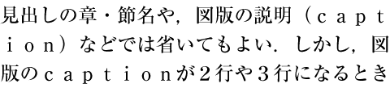
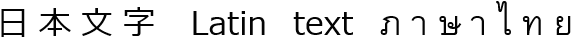
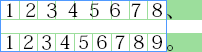

This CSS module defines properties for text manipulation and specifies their processing model. It covers line breaking, justification and alignment, white space handling, and text transformation.
CSS is a language for describing the rendering of structured documents
(such as HTML and XML)
on screen, on paper, etc.
Status of this document
This is a public copy of the editors’ draft.
It is provided for discussion only and may change at any moment.
Its publication here does not imply endorsement of its contents by W3C.
Don’t cite this document other than as work in progress.
Please send feedback
by filing issues in GitHub (preferred),
including the spec code “css-text” in the title, like this:
“[css-text] …summary of comment…”.
All issues and comments are archived.
Alternately, feedback can be sent to the (archived) public mailing list
www-style@w3.org.
The test coverage information in this specification
covers wpt/css/css-text/ and subdirectories,
as well as those tests in wpt/css/CSS2/ and subdirectories
that relate to this specification.
The following tests are crash tests
that relate to general usage
of the features described in this specification
but are not tied to any particular normative statement.
In addition to the property-specific values listed in their definitions,
all properties defined in this specification
also accept the CSS-wide keywords as their property value.
For readability they have not been repeated explicitly.
1.3.
Languages and Typesetting
Tests
Tests not needed for this section:
these are definitions,
they get tested through their application,
not by themselves.
Authors should accurately language-tag their content
for the best typographic behavior.
Many typographic effects vary by linguistic context.
Language and writing system conventions can affect
line breaking, hyphenation, justification, glyph selection,
and many other typographic effects.
In CSS, language-specific typographic tailorings
are only applied when the content language is known (declared).
Therefore,
higher quality typography requires authors to communicate to the UA
the correct linguistic context of the text in the document.
The content language of an element is the (human) language
the element is declared to be in, according to the rules of the
document language.
Note that it is possible for the content language of an element
to be unknown—e.g. untagged content,
or content in a document language that does not have a language-tagging facility,
is considered to have an unknown content language.
The content language an element is declared to be in
also identifies the specific written form of that language used in that element,
known as the content writing system.
Depending on the document language’s facilities for identifying the content language,
this information can be explicit or implied.
See the normative Appendix F:
Identifying the Content Writing System.
Note: Some languages have more than one writing system tradition;
in other cases a language can be transliterated into a foreign writing system.
Authors should subtag such cases
so that the UA can adapt appropriately.
For example, Korean (ko) can be written in
Hangul (-Hang),
Hanja (-Hani),
or a combination (-Kore).
Historical documents written solely in Hanja
do not use word spaces and
are formatted more like modern Chinese than modern Korean.
In other words, for typographic purposes ko-Hani
behaves more like zh-Hant
than ko (ko-Kore).
As another example Japanese (ja) is typically written
in a combination (-Japn) of Hiragana (-Hira),
Katakana (-Kana), and Kanji (-Hani).
However, it can also be “romanized” into Latin (-Latn)
for special purposes like language-learning textbooks,
in which case it should be formatted more like English than Japanese.
As a third example contemporary Mongolian is written in two scripts:
Cyrillic (-Cyrl, officially used in Mongolia)
and Mongolian (-Mong, more common in Inner Mongolia, part of China).
These have very different formatting requirements,
with Cyrillic behaving similar to Latin and Greek,
and Mongolian deriving from both Arabic and Chinese writing conventions.
1.4.
Characters and Letters
Tests
For the most part, tests not really needed for this section:
these are definitions,
they get tested through their applications,
by themselves.
The few testable assertions that are made have coverage.
Possible additions:
* turning the content of example 1 into tests (first, check that it’s not already done).
The basic unit of typesetting is the character.
However, because writing systems are not always as simple as the basic English alphabet,
what a character actually is depends on the context in which the term is used.
For example, in Hangul (the Korean writing system),
each square representation of a syllable
(e.g. 한=Han)
can be considered a character.
However, the square symbol is really composed of multiple letters each representing a phoneme
(e.g. ㅎ=h,
ㅏ=a,
ㄴ=n)
and these also could each be considered a character.
A basic unit of computer text encoding, for any given encoding,
is also called a character,
and depending on the encoding,
a single encoding character might correspond
to the entire pre-composed syllabic character (e.g. 한),
to the individual phonemic character (e.g. ㅎ),
or to smaller units such as
a base letterform (e.g. ㅇ)
and any combining marks that vary it (e.g. extra strokes that represent aspiration).
In turn, a single encoding character can be represented in the data stream as one or more bytes;
and in programming environments one byte is sometimes also called a character.
Therefore the term character is fairly ambiguous where technical precision is required.
For text layout, we will refer to the typographic character unit
as the basic unit of text.
Even within the realm of text layout,
the relevant character unit depends on the operation.
For example, line-breaking and letter-spacing will segment
a sequence of Thai characters that include U+0E33 ำ THAI CHARACTER SARA AM differently;
or the behavior of a conjunct consonant in a script such as Devanagari
may depend on the font in use.
So the typographic character represents a unit of the writing system—such as a Latin alphabetic letter (including its diacritics),
Hangul syllable,
Chinese ideographic character,
Myanmar syllable cluster—that is indivisible with respect to a particular typographic operation
(line-breaking, first-letter effects, tracking, justification, vertical arrangement, etc.).
Unicode Standard Annex #29: Text Segmentation
defines a unit called the grapheme cluster
which approximates the typographic character.
[UAX29]
A UA must use the extended grapheme cluster
(not legacy grapheme cluster), as defined in UAX29,
as the basis for its typographic character unit.
However, the UA should tailor the definitions
as required by typographic tradition
since the default rules are not always appropriate or ideal—and is expected to tailor them differently
depending on the operation as needed.
Note: The rules for such tailorings are out of scope for CSS.
The following are some examples of typographic character unit tailorings
required by standard typesetting practice:
In some scripts such as Myanmar or Devanagari,
the typographic character unit for both justification and line-breaking
is an entire syllable,
which can include more than one Unicode grapheme cluster.
[UAX29]
In other scripts such as Thai or Lao,
even though for line-breaking the typographic character
matches Unicode’s default grapheme clusters,
for letter-spacing the relevant unit
is less than a Unicode grapheme cluster,
and may require decomposition or other substitutions
before spacing can be inserted.
[UAX29]
For instance,
to properly letter-space the Thai word คำ (U+0E04 + U+0E33),
the U+0E33 needs to be decomposed into U+0E4D + U+0E32,
and then the extra letter-space inserted before the U+0E32: คํ า.
A slightly more complex example is น้ำ (U+0E19 + U+0E49 + U+0E33).
In this case, normal Thai shaping will first decompose the U+0E33 into U+0E4D + U+0E32
and then swap the U+0E4D with the U+0E49, giving U+0E19 + U+0E4D + U+0E49 + U+0E32.
As before the extra letter-space is then inserted before the U+0E32: นํ้ า.
Vertical typesetting can also require tailoring.
For example, when typesetting upright text,
Tibetan tsek and shad marks are kept with the preceding grapheme cluster,
rather than treated as an independent typographic character unit.
[CSS-WRITING-MODES-4]
The rendering characteristics of a typographic character unit divided
by an element boundary is undefined.
Ideally each component should be rendered
according to the formatting requirements of its respective element’s properties
while maintaining correct shaping and positioning
of the typographic character unit as a whole.
However, depending on the nature of the formatting differences between its parts
and the capabilities of the font technology in use,
this is not always possible.
Therefore such a typographic character unit
may be rendered as belonging to either side of the boundary,
or as some approximation of belonging to both.
Authors are forewarned that dividing grapheme clusters
or ligatures
by element boundaries may give inconsistent or undesired results.
1.5.
Text Processing
Tests
This section has adequate coverage.
Exhaustive coverage unrealistic,
since this section is effectively a dependency on all of Unicode.
Some tests nonetheless provided for key functionality
(such as the effect of certain control characters on Arabic shaping).
CSS is built on Unicode.
[UNICODE]
UAs that support Unicode must adhere to all normative requirements
of the Unicode Core Standard,
except where explicitly overridden by CSS.
UAs implemented on the basis of a non-Unicode text encoding model are still
expected to fulfill the same text handling requirements
by assuming an appropriate mapping and analogous behavior.
For the purpose of determining adjacency for text processing
(such as white space processing, text transformation, line-breaking, etc.),
and thus in general within this specification,
intervening inline box boundaries and out-of-flow elements
must be ignored.
With respect to text shaping, however, see § 8.7 Shaping Across Element Boundaries.
This section has good test coverage overall,
and very good i18n coverage in particular.
Missing tests:
* no test of Animation type.
* Applies to text
Possible additions:
* An automated test for plain text copy&paste not applying transforms. Not clear such an automated test is possible, but it would be nice to have one if it were.
This property transforms text for styling purposes.
It has no effect on the underlying content,
and must not affect the content of a plain text copy & paste operation.
Authors must not rely on text-transform for semantic purposes;
rather the correct casing and semantics should be encoded
in the source document text and markup.
Puts all typographic character units in full-width form.
If a character does not have a corresponding full-width form,
it is left as is.
This value is typically used to typeset Latin letters and digits
as if they were ideographic characters.
Tests
Converts all small Kana characters to the equivalent full-size Kana.
This value is typically used for ruby annotation text,
where authors may want all small Kana to be drawn as large Kana
to compensate for legibility issues at the small font sizes typically used in ruby.
Tests
The following example converts the ASCII characters
used in abbreviations in Japanese text to their full-width variants
so that they lay out and line break like ideographs:
abbr:lang(ja){text-transform: full-width;}
Note: The purpose of text-transform is
to allow for presentational casing transformations
without affecting the semantics of the document.
Note in particular that text-transform casing operations are lossy,
and can distort the meaning of a text.
While accessibility interfaces may wish to convey
the apparent casing of the rendered text to the user,
the transformed text cannot be relied on to accurately represent
the underlying meaning of the document.
In this example,
the first line of text is capitalized as a visual effect.
This effect cannot be written into the source document
because the position of the line break depends on layout.
But also, the capitalization is not reflecting a semantic distinction
and is not intended to affect the paragraph’s reading;
therefore it belongs in the presentation layer.
In this example,
the ruby annotations,
which are half the size of the main paragraph text,
are transformed to use regular-size kana
in place of small kana.
rt {font-size:50%;text-transform: full-size-kana;}
:is(h1, h2, h3, h4) rt {text-transform: none;/* unset for large text*/}
Note that while this makes such letters easier to see at small type sizes,
the transformation distorts the text:
the reader needs to mentally substitute small kana
in the appropriate places—not unlike reading a Latin inscription
where all “U”s look like “V”s.
For example, if text-transform: full-size-kana were applied to the following source,
the annotation would read “じゆう” (jiyū), which means “liberty”,
instead of “じゅう” (jū), which means “ten”,
the correct reading and meaning for the annotated “十”.
<ruby>十<rt>じゅう</ruby>
2.1.1.
Mapping Rules
Tests
This section has adequate test coverage.
For capitalize, what constitutes a “word“ is UA-dependent;
[UAX29] is suggested (but not required)
for determining such word boundaries.
Out-of-flow elements and inline element boundaries
must not introduce a text-transform word boundary
and must be ignored when determining such word boundaries.
Note: Authors cannot depend on capitalize to follow
language-specific titlecasing conventions
(such as skipping articles in English).
The UA must use the full case mappings for Unicode characters,
including any conditional casing rules,
as defined in the Default Case Algorithms section of The Unicode Standard.
[UNICODE]
If (and only if) the content language of the element is,
according to the rules of the document language,
known,
then any appropriate language-specific rules must be applied as well.
These minimally include,
but are not limited to,
the language-specific rules in Unicode’s
SpecialCasing.txt.
For example, in Turkish there are two “i”s,
one with a dot—“İ” and “i”—and one without—“I” and “ı”.
Thus the usual case mappings between “I” and “i”
are replaced with a different set of mappings
to their respective dotless/dotted counterparts,
which do not exist in English.
This mapping must only take effect
if the content language is Turkish
written in its modern Latin-based writing system
(or another Turkic language that uses Turkish casing rules);
in other languages,
the usual mapping of “I” and “i” is required.
This rule is thus conditionally defined in Unicode’s SpecialCasing.txt file.
The definition of full-width and half-width forms
can be found in Unicode Standard Annex #11: East Asian Width.
[UAX11]
The mapping to full-width form is defined
by taking code points with the <wide>
or the <narrow> tag
in their Decomposition_Mapping
in Unicode Standard Annex #44: Unicode Character Database.
[UAX44]
For the <narrow> tag,
the mapping is from the code point to the decomposition
(minus <narrow> tag),
and for the <wide> tag,
the mapping is from the decomposition
(minus the <wide> tag)
back to the original code point.
Some languages and writing systems have alternative ways
of delimiting words,
either using different separating characters,
or sometimes no visible character at all.
This property allows authors to change the rendering
from one style to another
without needing to change the markup.
A virtual expandable separator is
a UA-detected syntactic boundary in the text
that represents an expandable separator
not otherwise occuring in the source document.
It has no effect other than for this property.
Like text-transform, this property transforms text for styling purposes only.
It has no effect on the underlying content,
and must not affect the content of a plain text copy & paste operation.
Unlike books for adults, Japanese books for young children often feature spaces between sentence segments,
to facilitate reading.
People with dyslexia also tend to find this style easier to read.
Absent any particular styling, the following sentence would be rendered as depicted below.
Phrase-based spacing can be achieved with the following css:
p {word-space-transform: ideographic-space;}
むかしむかし、 あるところに、 おじいさんと おばあさんが すんでいました。
Another common variant additionally restricts the allowable line breaks to these phrase boundaries.
Using the same markup, this is easily achieved with the following css:
p {word-break: keep-all;word-space-transform: ideographic-space;}
In addition to making the source code more readable,
using wbr rather than U+200B in the markup
also allow authors to classify the delimiters into different groups.
In the following example,
wbr elements are either
unmarked when they delimit a word,
or marked with class p when they also delimit a phrase.
Using this, it is possible not only to enable the rather common phrase-based spacing,
but also word-by-word spacing
that is likely to be preferred
by people with dyslexia to reduce ambiguities,
or other variants
such as a combination of phrase-based spacing and of word-based wrapping.
Usual rendering
らいしゅう
Phrase spacing
p wbr.p {word-space-transform: ideographic-space;}
らいしゅう
Word spacing
p wbr {word-space-transform: ideographic-space;}
らいしゅう
Phrase spacing, word wrapping
p {word-break: keep-all;}
p wbr.p {word-space-transform: ideographic-space;}
らいしゅう
Word spacing and wrapping
p {word-break: keep-all;}
p wbr {word-space-transform: ideographic-space;}
らいしゅう
2.3.
Order of Operations
Tests
This section has adequate test coverage.
When multiple transformations need to be applied,
they are applied in the following order:
3.
White Space and Wrapping: the white-space property
Tests
This section has good overall test coverage,
particularly through tests for [[#white-space-processing]] and subsections,
and longhand properties.
Missing tests:
* No test of Animation type
* Intrinsic (min and max) sizing tests for normal and nowrap.
* shorthand to longhand expansion involving white-space-trim values and preserve-spaces
This section has reasonably good test coverage.
Missing tests:
* “As required by Unicode, unsupported Default_ignorable characters must be ignored for text rendering”
The source text of a document often contains formatting
that is not relevant to the final rendering:
for example,
breaking the source into segments
(lines) for ease of editing
or adding white space characters such as tabs and spaces
to indent the source code.
CSS white space processing allows the author
to control interpretation of such formatting:
to preserve or collapse it away when rendering the document.
White space processing in CSS
(which is controlled with the white-space-collapse and white-space-trim properties)
interprets white space characters only for rendering:
it has no effect on the underlying document data.
Note: Depending on the document language,
segments can be separated by a particular newline sequence
(such as a line feed or CRLF pair),
or delimited by some other mechanism,
such as the SGML RECORD-START and RECORD-END tokens.
For CSS processing,
each document language–defined “segment break” or “newline sequence”—or if none are defined, each line feed (U+000A)—in the text is treated as a segment break,
which is then interpreted for rendering as specified by the white-space property.
In the case of HTML,
newlines are normalized to line feed characters (U+000A)
for representation in the DOM,
so when an HTML document is represented as a DOM tree
each line feed (U+000A)
is treated as a segment break.
[HTML][DOM]
Note: In most common CSS implementations,
HTML does not get styled directly.
Instead, it is processed into a DOM tree,
which is then styled.
Unlike HTML,
the DOM does not give any particular meaning to carriage returns (U+000D),
so they are not treated as segment breaks.
If carriage returns (U+000D) are inserted into the DOM
by means other than HTML parsing,
they then get treated as defined below.
Note: A document parser might
not only normalize any segment breaks,
but also collapse other space characters or
otherwise process white space according to markup rules.
Because CSS processing occurs after the parsing stage,
it is not possible to restore these characters for styling.
Therefore, some of the behavior specified below
can be affected by these limitations and
may be user agent dependent.
Control characters (Unicode categoryCc)—other than tabs (U+0009),
line feeds (U+000A),
carriage returns (U+000D)
and sequences that form a segment break—must be rendered as a visible glyph
which the UA must synthesize if the glyphs found in the font are not visible,
and must be otherwise treated as any other character
of the Other Symbols (So) general category and Common script.
The UA may use a glyph provided by a font specifically for the control character,
substitute the glyphs provided for the corresponding symbol in the Control Pictures block,
generate a visual representation of its code point value,
or use some other method to provide an appropriate visible glyph.
As required by Unicode,
unsupported Default_ignorable characters
must be ignored for text rendering.
[UNICODE]
Note: For HTML documents,
carriage returns present in the source code
are converted to line feeds at the parsing stage
(see HTML § 13.2.3.5 Preprocessing the input stream
and the definition of normalize newlines in Infra
and therefore do no appear as U+000D CARRIAGE RETURN to CSS.
[HTML][INFRA])
However, the character is preserved—and the above rule observable—when encoded using an escape sequence (
).
This section has limited direct coverage,
but extensive coverage through the 'white-space' shorthand.
Missing tests:
* any direct tests as a longhand (other than syntax and inheritance)
* tests of the preserve-spaces value (direct or indirect)
* tests of the discard value (direct or indirect)
This section is still under discussion and may change in future drafts.
This property specifies whether and how
white space
is collapsed.
Values have the following meanings,
which must be interpreted according to
the White Space Processing Rules:
collapse
This value directs user agents to collapse sequences of white space
into a single character
(or in some cases, no character).
Tests
This value prevents user agents
from collapsing sequences of white space,
and converts tabs and segment breaks to spaces.
(This value is intended to represent the behavior
of xml:space="preserve" in SVG.)
break-spaces
The behavior is identical to that of preserve,
except that:
Note: This value does not guarantee
that there will never be any overflow due to white space:
for example, if the line length is so short
that even a single white space character does not fit,
overflow is unavoidable.
discard
This value directs user agents to “discard”
all white space in the element.
Tests
Does this preserve line break opportunities or no? Do we need a distinct "hide" value?
If it preserves line break opportunities,
maybe it should be replaced with a word-space-transform value?
White space that was not removed or collapsed due to white space processing
is called preserved white space.
The following style rules implement MathML’s white space processing:
This property allows authors to specify trimming behavior
at the beginning and end of a box.
Values have the following meanings:
discard-before
This value directs the UA to collapse all collapsible whitespace
immediately before the start of the element.
discard-after
This value directs the UA to collapse all collapsible whitespace
immediately after the end of the element.
discard-inner
For block containers this value directs UAs to discard
all whitespace at the beginning of the element up to and including
the last segment break before the first non-white-space character in the element
as well as to discard all white space at the end of the element
starting with the first segment break after the last non-white-space character in the element.
For other elements this value directs UAs to discard
all whitespace at the beginning and end of the element.
Tests
The following style rule removes source-formatting white space
adjacent to the opening/closing tags of a preformatted block,
but not any indentation or interleaved white space
applied to the actual contents of the element:
pre { white-space: pre; white-space-trim: discard-inner; }
This results in the following two source-code snippets:
This section has good test coverage.
Most tests to be found in subsections.
Except where specified otherwise,
white space processing in CSS affects only
the document white space characters:
spaces (U+0020), tabs (U+0009), and segment breaks.
Note: The set of characters considered document white space
(part of the document content)
and those considered syntactic white space
(part of the CSS syntax)
are not necessarily identical.
However, since both include spaces (U+0020), tabs (U+0009), and line feeds (U+000A)
most authors won’t notice any differences.
Besides space (U+0020)
and no-break space (U+00A0),
Unicode defines a number of additional space separator characters.
[UNICODE]
In this specification
all characters in the Unicode general category Zs
except space (U+0020)
and no-break space (U+00A0)
are collectively referred to as
other space separators.
This section has good test coverage,
most parts are well exercised.
Missing tests:
* If white-space-collapse is set to preserve-spaces, each tab and segment break is converted to a space.
Note:white-space-trim is taken into account prior to this phase.
Any collapsiblespace immediately following another collapsiblespace—even one outside the boundary of the inline containing that space,
provided both spaces are within the same inline formatting context—is collapsed to have zero advance width.
(It is invisible,
but retains its soft wrap opportunity,
if any.)
Tests
The following example illustrates
the interaction of white-space collapsing and bidirectionality.
Consider the following markup fragment, taking special note of spaces
(with varied backgrounds and borders for emphasis and identification):
<ltr>A<rtl>B</rtl>C</ltr>
where the <ltr> element represents a left-to-right embedding
and the <rtl> element represents a right-to-left embedding.
If the white-space property is set to normal,
the white-space processing model will result in the following:
The space before the B ()
will collapse with the space after the A ().
The space before the C ()
will collapse with the space after the B ().
This will leave two spaces,
one after the A in the left-to-right embedding level,
and one after the B in the right-to-left embedding level.
The text will then be ordered according to the Unicode bidirectional algorithm,
with the end result being:
ABC
Note that there will be two spaces between A and B,
and none between B and C.
This is best avoided by putting spaces outside the element
instead of just inside the opening and closing tags
and, where practical,
by relying on implicit bidirectionality instead of explicit embedding levels.
If the tab size is zero,
preservedtabs are not rendered.
Otherwise, each preservedtab is rendered
as a horizontal shift that lines up
the start edge of the next glyph with the next tab stop.
If this distance is less than 0.5ch,
then the subsequent tab stop is used instead.
Tab stops occur at points
that are multiples of the tab size
from the starting content edge
of the preservedtab’s nearest block container ancestor.
The tab size is given by the tab-size property.
Tests
Note: Such characters therefore take up space,
and depending on the available space
and applicable line breaking controls
will either overflow or cause the line to wrap.
This example shows that conditionally hanging white space
at the end of lines with forced breaks
provides symmetry with the start of the line.
An underline is added to help visualize the spaces.
p {white-space: pre-wrap;width:5ch;border: solid 1px;font-family: monospace;text-align: center;}
<p> 0 </p>
The sample above would be rendered as follows:
0
Since the final space is before a forced line break
and does not overflow,
it does not hang,
and centering works as expected.
This example illustrates the difference
between hangingspaces
at the end of lines without forced breaks,
and conditionally hanging them at the end of lines with forced breaks.
An underline is added to help visualize the spaces.
p {white-space: pre-wrap;width:3ch;border: solid 1px;font-family: monospace;}
<p> 0 0 0 0 </p>
The sample above would be rendered as follows:
0 0 0 0
If p {text-align: right;} was added,
the result would be as follows:
0 0 0 0
As the preservedspaces at the end of lines without a forced break must hang,
they are not considered when placing the rest of the line during text alignment.
When aligning towards the end,
this means any such spaces will overflow,
and will not prevent the rest of the line’s content from being flush with the edge of the line.
On the other hand,
preserved spaces at the end of a line with a forced break
conditionally hang.
Since the space at the end of the last line would not overflow in this example,
it does not hang
and therefore is considered during text alignment.
In the following example,
there is not enough room on any line to fit the end-of-line spaces,
so they hang on all lines:
the one on the line without a forced break because it must,
as well as the one on the line with a forced break,
because it conditionally hangs and overflows.
An underline is added to help visualize the spaces.
p {white-space: pre-wrap;width:3ch;border: solid 1px;font-family: monospace;}
<p>0 0 0 0 </p>
0 0 0 0
The last line is not wrapped before the last 0
because characters that conditionally hang are not considered
when measuring the line’s contents for fit.
4.3.3.
Segment Break Transformation Rules
Tests
This section has reasonable test coverage,
though some assertions are only tested indirectly through
test for other features that rely on this,
rather than by dedicated tests.
Then any remaining segment break
is either transformed into a space (U+0020)
or removed
depending on the context before and after the break.
The rules for this operation are UA-defined in this level.
Tests
Note: The white space processing rules have already
removed any tabs and spaces around the segment break
before this context is evaluated.
The purpose of the segment break transformation rules
(and white space collapsing in general)
is to “unbreak” text that has been
broken into segments
to make the document source code easier to work with.
In languages that use word separators, such as English and Korean,
“unbreaking” a line requires joining the two lines with a space.
Here is an English paragraph
that is broken into multiple lines
in the source code so that it can
be more easily read and edited
in a text editor.
Here is an English paragraph that is broken into multiple lines in the source code so that it can be more easily read and edited in a text editor.
Eliminating a line break in English
requires maintaining a space in its place.
In languages that have no word separators, such as Chinese,
“unbreaking” a line requires joining the two lines with no intervening space.
這個段落是那麼長，
在一行寫不行。最好
用三行寫。
這個段落是那麼長，在一行寫不行。最好用三行寫。
Eliminating a line break in Chinese
requires eliminating any intervening white space.
The segment break transformation rules can use adjacent context
to either transform the segment break into a space
or eliminate it entirely.
Note: Historically, HTML and CSS have unconditionally converted segment breaks to spaces,
which has prevented content authored in languages such as Chinese
from being able to break lines within the source.
Thus UA heuristics need to be conservative about where they discard segment breaks
even as they strive to improve support for such languages.
This property determines the tab size
used to render preserved tab characters (U+0009).
A <number> represents the measure
as a multiple of the advance width of the space character (U+0020)
of the nearest block container ancestor of the preservedtab,
including its associated letter-spacing and word-spacing.
Negative values are not allowed.
Tests mostly not needed for this section:
these are definitions,
they get tested through their application,
not by themselves.
When inline-level content is laid out into lines, it is broken across line boxes.
Such a break is called a line break.
When a line is broken due to explicit line-breaking controls
(such as a preserved newline character),
or due to the start or end of a block,
it is a forced line break.
When a line is broken due to content wrapping
(i.e. when the UA creates unforced line breaks
in order to fit the content within the measure),
it is a soft wrap break.
The process of breaking inline-level content into lines is called line breaking.
Wrapping is only performed at an allowed break point,
called a soft wrap opportunity.
When wrapping is enabled (see white-space),
the UA must minimize the amount of content overflowing a line
by wrapping the line at a soft wrap opportunity,
if one exists.
5.1.
Deciding Whether to Wrap: the text-wrap-mode property
Tests
This property is tested extensively through its shorthands,
but not much directly beyond parsing.
Missing test:
* preserved segment breaks are forced line breaks (probably tested already, but need to find those tests)
* CR and LF line breaking class are forced line breaks
* Direct tests of this property as a longhand
Content may break across lines
at allowed soft wrap opportunities,
as determined by the line-breaking rules in effect,
in order to minimize inline-axis overflow.
Tests
tests using wrap directly through 'text-wrap-mode':
Lines may break at allowed break points
within the box,
as determined by the line-breaking rules in effect.
avoid
Line breaking is suppressed within the box:
the UA may only break within the box
if there are no other valid break points in the line.
If the text breaks,
line-breaking restrictions are honored as for
auto.
If boxes with avoid are nested
and the UA must break within these boxes,
a break in an outer box must be used
before a break within an inner box may be used.
5.2.1.
Example of using 'wrap-inside: avoid' in presenting a footer
Tests
This section does not need tests.
The priority of breakpoints can be set
to reflect the intended grouping of text.
Given the rules
footer { wrap-inside: avoid; }
venue { wrap-inside: avoid; }
date { wrap-inside: avoid; }
place { wrap-inside: avoid; }
These properties specify modifications to break opportunities
in line breaking (and flex line breaking [CSS3-FLEXBOX]).
Possible values:
auto
Lines may break at allowed break points
before and after the box,
as determined by the line-breaking rules in effect.
avoid
Line breaking is suppressed immediately before/after the box:
the UA may only break there
if there are no other valid break points
in the line.
If the text breaks,
line-breaking restrictions are honored as for
auto.
When wrapping is allowed
(see text-wrap-mode),
this property selects between several approaches for wrapping lines,
trading off between speed, quality and style of layout, or stability.
It does not change which soft wrap opportunity exist,
but changes how the user agent selects among them.
Possible values:
auto
The exact algorithm for selecting
which soft wrap opportunity to break at is UA-defined.
The algorithm may consider multiple lines
when making break decisions.
The UA may bias for speed over best layout.
The UA must not attempt to even out all lines
(including the last) as for balance.
This value selects the UA’s preferred (or most Web-compatible)
wrapping algorithm.
balance
Line breaks are chosen to balance
the remaining (empty) space in each line box,
if better balance than auto is possible.
This should avoid changing—and in the case of 5 or fewer lines must not change—the number of line boxes
the block would contain
if text-wrap were set to auto.
Note: The height of the line boxes may nevertheless change,
due to changes in which content appears together on one line.
The remaining space to consider
is that which remains after placing floats and inline content,
but before any adjustments due to text justification.
Line boxes are balanced when the standard deviation
from the average inline-size of the remaining space in each line box
is reduced over the block
(including lines that end in a forced break).
Groups of lines separated by a forced line break
are processed separately.
If the element is affected by line-clamp,
the clamping effect is applied first,
then the remaining lines are balanced.
UAs may treat this value as auto if there are more than ten lines to balance.
stable
Specifies that content on subsequent lines
should not be considered when making break decisions
so that when editing text any content before the cursor
remains stable;
otherwise equivalent to auto,
pretty
Specifies the UA should bias for better layout over speed,
and is expected to consider multiple lines
when making break decisions.
Otherwise equivalent to auto.
The user agent may among other things
attempt to avoid excessively short last lines,
similarly to avoid-orphans,
but it should also improve the layout in additional ways.
The precise set of improvements is user agent dependent,
and may include things such as:
reducing the variation in length between lines;
avoiding typographic rivers;
prioritizing different classes of soft wrap opportunities, hyphenation opportunities, or justification opportunities;
avoiding hyphenation on too many consecutive lines…
The necessary computations may be expensive,
especially when applied to large amounts of text.
Authors are encouraged to assess the impact on performance
when using text-wrap-style: pretty,
and possibly use it selectively where it matters most.
avoid-orphans
Specifies the UA should avoid excessively short last lines,
and is expected to consider more than one line
when making break decisions
(for example, to avoid "fixing" an orphan
by making the previous line too short).
The user agent may decide against improving the last line
when it would make some prior line(s) substantially unbalanced.
The user agent should not attempt to improve other aspects of the layout
beyond what auto
if those improvements come at a significant performance cost.
Note: In western typography, an “orphan” can refer to a single word on the last line of a paragraph.
However, not all languages or writing systems wrap lines at word boundaries,
and even in languages that do,
a few very short words on the last line may still be undesirable,
especially if the available inline space is long.
This specification does not therefore strictly define
lines to be too short only when they are composed a single word,
and lets the user agent be the judge of what is excessively short.
Note: See also the orphans property for control over fragmentation
and the other typographic meaning of “orphans”.
For instance, with the given line length, the following test would be wrapped with a single word on the last line,
which could be judged too short.
An attempt to make the last line less short by wrapping the previous line earlier would result in the following:
Circumnavigating
the
Mississippi river
While the last line would indeed no longer be short,
the penultimate line would be unsightly.
In such cases, user agents are expected
to prefer the first rendering
despite text-wrap-style: avoid-orphans being set.
Note: The auto value will typically map
to Web browsers’ speedy legacy line breaking,
which has so far used first-fit/greedy algorithms
that can often give sub-optimal results.
UAs can experiment with better line breaking algorithms
with this default value,
but as optimal results often take more time,
pretty and avoid-orphans are offered as opt-ins
to take more time for better results.
Both values are intended for body text,
where the last line is expected to be a bit shorter than the average line,
but avoid-orphans aims to avoid excessively short last lines while staying performant,
while pretty can sacrifice more speed in pursuit of even better layout;
the balance value is intended for titles and captions,
where equal-length lines of text tend to be preferred;
and the stable is intended for sections that are,
or are likely become toggled as,
editable.
See thread.
Issue is about requiring a minimum length for lines.
Common measures seem to be
At least as long as the text-indent.
At least X characters.
Percentage-based.
Suggestion for value space is match-indent | <length> | <percentage>
(with Xch given as an example to make that use case clear).
Alternately <integer> could actually count the characters.
It’s unclear how this would interact with text balancing (above);
one earlier proposal had them be the same property
(with 100% meaning full balancing).
People have requested word-based limits, but since this is really
dependent on the length of the word, character-based is better.
5.5.
Joint Wrapping Control: the text-wrap shorthand property
This section has partial test coverage.
Missing tests:
* For soft wrap opportunities before the first or after the last character of a box, the break occurs immediately before/after the box (at its margin edge) rather than breaking the box between its content edge and the content.
* Line breaking classes CM and SG must be honored
Untestable(?):
* UAs that allow wrapping at punctuation other than spaces should prioritize breakpoints. […]
Except where explicitly defined otherwise
(e.g. for line-break: anywhere or overflow-wrap: anywhere)
line breaking behavior defined for
the CM,
and SG,
WJ,
ZW,
GL,
and ZWJ
Unicode line breaking classes
must be honored.
[UAX14]Tests
UAs that allow wrapping at punctuation
other than word separators
in writing systems that use them
should prioritize breakpoints.
(For example, if breaks after slashes are given a lower priority than spaces,
the sequence “check /etc” will never break between the "/" and the "e".)
As long as care is taken to avoid such awkward breaks,
allowing breaks at appropriate punctuation other than word separators
is recommended,
as it results in more even-looking margins, particularly in narrow measures.
The UA may use the width of the containing block, the text’s language,
the line-break value,
and other factors in assigning priorities:
CSS does not define prioritization of soft wrap opportunities.
Prioritization of word separators is not expected,
however,
if word-break: break-all is specified
(since this value explicitly requests line breaking behavior
not based on breaking at word separators)—and is forbidden under line-break: anywhere.
For Web-compatibility
there is a soft wrap opportunity
before and after each replaced element or other atomic inline,
even when adjacent to a character that would normally suppress them,
including U+00A0 NO-BREAK SPACE.
However,
with the exception of U+00A0 NO-BREAK SPACE,
there must be no soft wrap opportunity
between atomic inlines and adjacent characters
belonging to the Unicode GL, WJ, or ZWJ line breaking classes.
[UAX14]Tests
For soft wrap opportunities created by characters
that disappear at the line break (e.g. U+0020 SPACE),
properties on the box directly containing that character
control the line breaking at that opportunity.
For soft wrap opportunities defined by the boundary between two characters or atomic inlines,
the white-space property
on the nearest common ancestor of the two characters
controls breaking;
which elements’ line-break, word-break, and overflow-wrap properties
control the determination of soft wrap opportunities
at such boundaries
is undefined in this level.
Tests
For soft wrap opportunities before the first
or after the last character of a box,
the break occurs immediately before/after the box
(at its margin edge)
rather than breaking the box
between its content edge and the content.
For example,
if the word “نوشتن” is broken between the “ش” and “ت”,
the “ش” still takes its initial form (“ﺷ”),
and the “ت” its medial form (“ﺘ”)—forming as in “ﻧﻮﺷ | ﺘﻦ”, not as in “نوش | تن”.
6.
Line Breaking and Word Boundaries
Tests
This section deals in generalities
rather than specific requirements.
Exhaustive coverage is neither practical
nor needed,
as more specific requirements
are made in different sections,
and can be tested there.
Nonetheless,
this can be a good section
to host tests for i18n requirements
not covered in detail by the spec.
Possible additions:
* tests for at least one language with line breaking based on orthographic syllable boundaries
* Basic line breaking tests for some languages mentioned: Javanese, Balinese, Yi
In most writing systems,
in the absence of hyphenation a soft wrap opportunity occurs only at word boundaries.
Many such systems use spaces or punctuation to explicitly separate words,
and soft wrap opportunities can be identified by these characters.
Scripts such as Thai, Lao, and Khmer, however,
do not use spaces or punctuation to separate words.
Although the zero width space (U+200B) can be used as an explicit word delimiter
in these scripts,
this practice is not common.
As a result, a lexical resource is needed
to correctly identify soft wrap opportunities in such texts.
In some other writing systems,
soft wrap opportunities are based on orthographic syllable boundaries,
not word boundaries.
Some of these systems,
notably Brahmic scripts such as Javanese and Balinese,
require analysis of the text to find breaking opportunities.
Unlike languages that use characters from the SA line breaking class,
this analysis does not depend on the content language
nor requires (language specific) word boundary detection
or a lexical resource.
Tests
In others such as Chinese (as well as Japanese, Yi, and sometimes also Korean),
each syllable tends to correspond to a single typographic letter unit,
and thus line breaking conventions allow the line to break
anywhere except between certain character combinations.
Additionally the level of strictness in these restrictions
varies with the typesetting style.
While CSS does not fully define where soft wrap opportunities occur,
some controls are provided to distinguish common variations:
The line-break property allows choosing various levels of “strictness”
for line breaking restrictions.
The word-break property controls what types of letters
are glommed together to form unbreakable “words”,
causing CJK characters to behave like non-CJK text or vice versa,
enabling control over word detection in South East Asian Languages,
or allowing words to be grouped into phrases…
The hyphens property controls whether automatic hyphenation
is allowed to break words in scripts that hyphenate.
The overflow-wrap property allows the UA to take a break anywhere
in otherwise-unbreakable strings that would otherwise overflow.
6.1.
Breaking Rules for Letters: the word-break property
Tests
This section has partial test coverage.
Missing tests:
* Applies to text
* No test of Animation type.
* affects intrinsic sizing (tested for word-break:break-word)
* treating non-letter typographic character units belonging to the NU, AL, AI, or ID Unicode line breaking classes
* any typographic character units resolving to the any typographic letter units (and any typographic character units resolving to the NU (“numeric”), AL (“alphabetic”), or SA (“Southeast Asian”) line breaking classes
* effect of word-break:keep-all on NU and AI classes
* Symbols that line-break the same way as letters of a particular category are affected the same way as those letters.
* does not suppress wbr (tested with auto-phrase, but not with keep-all or manual)
* More tests for “does not affect rules governing the soft wrap opportunities created around punctuation
This property specifies soft wrap opportunities between and within “words”,
i.e. where it is “normal” and permissible to break lines of text.
It focuses on breaks between letters,
and does not define whether and how soft wrap opportunities
are created by white space and other space separators
(though auto-phrase may suppress some),
nor around punctuation.
(See line-break for controls affecting punctuation and small kana.)
For example,
in some styles of CJK typesetting,
English words are allowed to break between any two letters,
rather than only at spaces or hyphenation points;
this can be enabled with word-break:break-all.

An example of English text embedded in Japanese
being broken at an arbitrary point in the word.
As another example, Korean has two styles of line-breaking:
between any two Korean syllables (word-break: normal)
or, like English, mainly at spaces (word-break: keep-all).
각 줄의 마지막에 한글이 올 때 줄 나눔 기
준을 “글자” 또는 “어절” 단위로 한다.
각 줄의 마지막에 한글이 올 때 줄 나눔
기준을 “글자” 또는 “어절” 단위로 한다.
Ethiopic similarly has two styles of line-breaking,
either only breaking at word separators (word-break: normal),
or also allowing breaks between letters within a word (word-break: break-all).
Words break according to their customary rules,
as described above.
Korean, which commonly exhibits two different behaviors,
allows breaks between any two consecutive Hangul/Hanja.
For Ethiopic, which also exhibits two different behaviors,
such breaks within words are not allowed.
Tests
Breaking is allowed within “words”:
specifically,
in addition to soft wrap opportunities allowed for normal,
any typographic letter units
(and any typographic character units resolving to the
NU (“numeric”),
AL (“alphabetic”),
or SA (“Southeast Asian”)
line breaking classes [UAX14])
are instead treated as ID
(“ideographic characters”)
for the purpose of line-breaking.
Hyphenation is not applied.
Tests
Note: This option enables the other common behavior for Ethiopic.
It is also often used in a context where
the text consists predominantly of CJK characters
with only short non-CJK excerpts,
and it is desired that the text be better distributed on each line.
Note: This is the other common behavior for Korean
(which uses spaces between words),
and is also useful for mixed-script text where CJK snippets are mixed
into another language that uses spaces for separation.
alternatively, this value could be based
on keep-all rather than normal.
Yet another variant is to merge this behavior
with keep-all.
Note: Some Southeast Asian languages are commonly misdetected by user agents.
With word-break: normal,
they would then apply inappropriate language-specific logic
to find wrapping opportunities,
and place them inappropriately.
For instance,
many languages other than Thai are written using the Thai script,
and line-breaking them as if they were Thai
will generally produce inadequate—and possibly confusing—results.
When this occurs,
this value enables authors to turn off
the word boundary detection
built into user agents for word-break: normal,
so that they can manually mark up the text to indicate wrapping opportunities
and obtain sensible results.
Authors using this value
are expected to manually indicate word boundaries for Southeast Asian languages,
using wbr or U+200B.
Otherwise, there will be no soft wrap opportunity
and the text may overflow.
auto-phrase
Behaves the same as normal,
except that
this value directs the user agent to perform language-specific content analysis
to prioritize keeping natural phrases (of multiple words) together.
If the content language of the element is unknown,
or if the user agent does not know how to detect phrase boundaries
for that particular language,
this value must behave as normal.
Otherwise,
the user agent should detect phrase boundaries
and suppress soft wrap opportunities
within each phrase.
Note: Whether a word boundary detection system designed for one language
is suitable for some or all dialects of that language is somewhat subjective,
and this specifications leaves it at the discretion of the user agent.
Even if a detection system is not able to cope
with all nuances of a particular dialect,
it may be reasonable to claim support
if the detection correctly recognizes word boundaries most of the time.
However, the user agent would do a disservice to authors and users
if it claimed support for languages
where it fails to detect most word boundaries
or has a high error rate.
If a user agent has a word-boundary detection system for Cantonese
that is not suitable for the broader set of Chinese languages,
auto-phrase should have an effect on content marked as
lang=yue, lang=zh-yue, or lang=zh-HK,
but not lang=zh or lang=zh-Hant.
However, if the user agent supports a generic word-boundary detection system
that is suitable for Chinese in general,
auto-phrase should have an effect on content
marked with the broad lang=zh characterization,
as well as any more specific ones,
such as lang=zh-yue, lang=zh-Hant-HK, lang=zh-Hans-SG, or lang=zh-hak.
Symbols that line-break the same way as letters of a particular category
are affected the same way as those letters.
User agents must not,
in response to any value of this property,
suppress soft wrap opportunities which are:
introduced by the wbr HTML element or U+200B ZERO WIDTH SPACE
Japanese is usually typeset allowing line breaks between each syllable.
However, it is sometimes preferred to suppress these wrapping opportunities
and to only allow wrapping at the end of certain sentence fragments.
This is most commonly done in very short pieces of text,
such as headings and table or figure captions.
This can be achieved manually by marking the allowed wrapping points
with wbr or U+200B ZERO WIDTH SPACE,
and suppressing the other ones using word-break: keep-all.
Alternatively,
in user agents that support detection of phrases boundaries in Japanese,
the same results can be achieved automatically
by using
word-break: auto-phrase
(assuming the content language is specified).
Sample markup and style rule
Expected rendering
Result in your browser
<h1>
窓ぎわの<wbr>トットちゃん
</h1>
h1 {word-break: normal;}
窓ぎわのトッ
トちゃん
窓ぎわの
<h1>
窓ぎわの<wbr>トットちゃん
</h1>
h1 {word-break: keep-all;}
窓ぎわの
トットちゃん
窓ぎわの
<h1lang=ja>
窓ぎわのトットちゃん
</h1>
h1 {word-break: auto-phrase;}
窓ぎわの
トットちゃん
窓ぎわのトットちゃん
When shaping scripts such as Arabic
are allowed to break within words due to break-all
the characters must still be shaped
as if the word were not broken.
For compatibility with legacy content,
the word-break property also supports
a deprecated break-word keyword.
When specified, this has the same effect as
word-break: normal and overflow-wrap: anywhere,
regardless of the actual value of the overflow-wrap property.
To provide the expected normal behavior
for Southeast Asian languages,
typographic character units with line breaking class SA in [UAX14]
must be treated as if they had class AL.
However, the user agent must additionally
analyze the content of a run of such characters
to detect word boundaries
and treat each boundary as a soft wrap opportunities.
As various languages can be written in scripts
which use the characters with class SA,
if the content language is known,
the user agent should use this information
to tailor its analysis.
For scripts (such as Balinese) that use line breaking based on orthographic syllables,
the UA must analyze the content
to find the correct points to insert soft wrap opportunities.
Note: At the time of writing,
Unicode does not define how to perform this analysis,
and treats all characters in these writing systems
as having line breaking class AL.
However,
a proposal has been made to solve that issue.
Even though it is not final,
it can be informative to consult.
[L2-22-080R]
6.1.1.3.
Fallback Breaking
Tests
This section has basic but adequate coverage
In order to avoid unexpected overflow,
if the user agent is unable to perform the requisite lexical
or orthographic analysis
for line breaking any content language that requires it—for example due to lacking a dictionary
for languages written in characters with class SA—it must assume a soft wrap opportunity
between pairs of typographic letter units in that writing system.
Note: This provision is not triggered merely when
the UA fails to find a word boundary in a particular text run;
the text run may well be a single unbreakable word.
It applies for example
when a text run is composed of Khmer characters (U+1780 to U+17FF)
if the user agent does not know how to determine
word boundaries in Khmer.
6.1.2.
Expressing User Preferences for Phrase-based Line Breaking
Tests
This section is untested, but it is not clear how it could be.
User agents may activate
language-specific content analysis
described in auto-phrase
in response to user preferences.
User agents with this behavior must do this
by setting the declared value of word-break to auto-phrase
in the user origin.
Note: This allows authors to detect
whether or not this feature is enabled by calling getComputedStyle(),
or to override it in the author origin where appropriate.
6.2.
Line Breaking Strictness: the line-break property
Tests
This section has extensive test coverage for CJK.
Missing tests:
* applies to text
* affects intrinsic sizing
* Line breaking classes CM and SG must be honored even with line-break: anywhere
Untestable(?):
* behavior of “auto”
This property specifies the strictness of line-breaking rules applied
within an element:
especially how wrapping interacts with punctuation and symbols.
Values have the following meanings:
auto
The UA determines the set of line-breaking restrictions to use,
and it may vary the restrictions based on the length of the line;
e.g., use a less restrictive set of line-break rules for short lines.
loose
Breaks text using the least restrictive set of line-breaking
rules. Typically used for short lines, such as in newspapers.
normal
Breaks text using the most common set of line-breaking rules.
strict
Breaks text using the most stringent set of line-breaking rules.
anywhere
There is a soft wrap opportunity around every typographic character unit,
including around any punctuation character
or preserved white spaces,
or in the middle of words,
disregarding any prohibition against line breaks,
even those introduced by characters with the GL, WJ, or ZWJ line breaking classes
or mandated by the word-break property.
[UAX14]
The different wrapping opportunities must not be prioritized.
Hyphenation is not applied.
Tests
CSS distinguishes between four levels of strictness
in the rules for text wrapping.
The precise set of rules in effect for each of
loose,
normal,
and strict
is up to the UA
and should follow language conventions.
However, for these three keywords, this specification does require that:
The following breaks are forbidden in strict line breaking
and allowed in normal and loose:
breaks before Japanese small kana
or the Katakana-Hiragana prolonged sound mark,
i.e. characters
from the Unicode line breaking class CJ.
[UAX14]Tests
The following breaks are allowed for loose line breaking
if the preceding character
belongs to the Unicode line breaking class ID[UAX14]
(including when the preceding character
is treated as ID
due to word-break: break-all),
and are otherwise forbidden:
breaks before suffixes:
Characters with the Unicode line breaking class PO[UAX14]
and the East Asian Width property[UAX11]Ambiguous,
Fullwidth,
or Wide.
Tests
breaks after prefixes:
Characters with the Unicode line breaking class PR[UAX14]
and the East Asian Width property[UAX11]Ambiguous,
Fullwidth,
or Wide.
Tests
Note: The requirements listed above
only create distinctions in CJK text.
In an implementation that matches only the rules above,
and no additional rules,
line-break would only affect CJK code points
unless the writing system is tagged as
Chinese or Japanese.
Future levels may add additional specific rules
for other writing systems and languages
as their requirements become known.
As UAs can add additional distinctions
between strict/normal/loose modes,
these values can exhibit differences in other writing systems as well.
For example, a UA with sufficiently-advanced Thai language processing ability
could choose to map different levels of strictness in Thai line-breaking
to these keywords,
e.g. disallowing breaks within compound words in strict mode
(e.g. breaking ตัวอย่างการเขียนภาษาไทย as ตัวอย่าง·การเขียน·ภาษาไทย)
while allowing more breaks in loose
(ตัวอย่าง·การ·เขียน·ภาษา·ไทย).
Note: While user agents can refer to [UAX14] as a starting point
for their line-breaking implementation,
the following deviations could be desirable
for maximum interoperability with existing implementations:
Not introducing a line break opportunity between
U+0021 (Exclamation Mark, !) and
a letter (Unicode general categoryL).
This prevents a break in the string “!important”.
Not introducing a line break opportunity between
U+002F (Solidus, /) and
a letter (Unicode general categoryL).
This prevents a break in dates such as “23/Jan/2024”.
Not introducing a line break opportunity between
U+007C (Vertical Line, |) and
a letter (Unicode general categoryL).
Not introducing a line break opportunity between
U+002D (Hyphen-Minus `-`) and
a digit (Unicode general categoryNd)
if the codepoint prior to the hyphen was _not_ a letter or digit
(Unicode general categoryL or Nd).
This prevents breaking after the minus sign before a number
such as in “-13”
whilst allowing breaks after the hyphen in “ABCD-1234” and “1234-5678”
which may appear in long URLs, for example.
Note: The CSSWG recognizes that in a future edition of the specification
finer control over line breaking may be necessary
to satisfy high-end publishing requirements.
6.3.
Hyphenation: Morphological Breaking Within Words
This section has partial test coverage.
Missing tests:
* Applies to text
* “Automatic hyphenation opportunities within a word must be ignored if the word contains a conditional hyphen (shy or U+00AD), in favor of the conditional hyphen(s)”
* “However, if, even after breaking at such opportunities, a portion of that word is still too long to fit on one line, an automatic hyphenation opportunity may be used.”
Hyphenation
is the controlled splitting of words
where they usually would not be allowed to break
to improve the layout of paragraphs,
typically splitting words at syllabic or morphemic boundaries
and often visually indicating the split
(usually by inserting a hyphen, U+2010).
In some cases, hyphenation may also alter the spelling of a word.
Regardless, hyphenation is a rendering effect only:
it must have no effect on the underlying document content
or on text selection or searching.
Hyphenation practices vary across languages,
and can involve not just inserting a hyphen before the line break,
but inserting a hyphen after the break (or both),
inserting a different character than U+2010,
or changing the spelling of the word.
Hyphenation occurs
when the line breaks at a valid hyphenation opportunity,
which is a type of soft wrap opportunity
that exists within a word where hyphenation is allowed.
In CSS hyphenation opportunities are controlled
with the hyphens property.
CSS Text Level 3 does not define the exact rules for hyphenation;
however UAs are strongly encouraged
to optimize their choice of break points
and to chose language-appropriate hyphenation points.
Note: The soft wrap opportunity introduced by
the U+002D - HYPHEN-MINUS character
or the U+2010 ‐ HYPHEN character
is not a hyphenation opportunity,
as no visual indication of the split is created when wrapping:
these characters are visible whether the line is wrapped at that point or not.
Note: This allows tables to hyphenate their contents
instead of overflowing their containing block,
which is particularly important in long-word languages like German.
This property controls whether hyphenation is allowed to create more
soft wrap opportunities within a line of text.
Values have the following meanings:
none
Words are not hyphenated,
even if characters inside the word
explicitly define hyphenation opportunities.
Note: This does not suppress the existing soft wrap opportunities
introduced by always visible characters such as
U+002D - HYPHEN-MINUS
or U+2010 ‐ HYPHEN.
Words are only hyphenated where there are characters inside the word
that explicitly suggest hyphenation opportunities.
The UA must use the appropriate language-specific hyphenation character(s)
and should apply any appropriate spelling changes
just as for automatic hyphenation at the same point.
Tests
In Unicode, U+00AD is a conditional "soft hyphen"
and U+2010 is an unconditional hyphen.
Unicode Standard Annex #14
describes the role of soft hyphens in
Unicode line breaking.
[UAX14]
In HTML,
­ represents the soft hyphen character,
which suggests a hyphenation opportunity.
ex­ample
auto
Words may be broken at hyphenation opportunities
determined automatically by a language-appropriate hyphenation resource
in addition to those indicated explicitly by a conditional hyphen.
Automatic hyphenation opportunities elsewhere within a word must be ignored
if the word contains a conditional hyphen
(­ or U+00AD SOFT HYPHEN),
in favor of the conditional hyphen(s).
However, if, even after breaking at such opportunities,
a portion of that word is still too long to fit on one line,
an automatic hyphenation opportunity may be used.
Tests
Correct automatic hyphenation requires a hyphenation resource
appropriate to the language of the text being broken.
The UA must therefore only automatically hyphenate text
for which the content language is known
and for which it has an appropriate hyphenation resource.
Authors should correctly tag their content’s language
(e.g. using the HTML lang attribute
or XML xml:lang attribute)
in order to obtain correct automatic hyphenation.
The UA may use language-tailored heuristics
to exclude certain words
from automatic hyphenation.
For example, a UA might try to avoid hyphenation in proper nouns
by excluding words matching certain capitalization and punctuation patterns.
Such heuristics are not defined by this specification.
(Note that such heuristics will need to vary by language:
English and German, for example, have very different capitalization conventions.)
For the purpose of the hyphens property,
what constitutes a “word” is UA-dependent.
However, inline element boundaries
and out-of-flow elements
must be ignored when determining word boundaries.
Any glyphs shown due to hyphenation
at a hyphenation opportunity
created by a conditional hyphen character
(such as U+00AD SOFT HYPHEN)
are represented by that character
and are styled according to the properties applied to it.
When shaping scripts such as Arabic are allowed to break within words
due to hyphenation,
the characters must still be shaped
as if the word were not broken.
This section has partial coverage.
Missing tests:
* applies to text
* inheritance
* the UA must insert the string according to the typographic conventions of the content language
Likely untestable:
* when the UA truncates the string (which it may not do),
it must not truncate part of a typographic character unit.
This property specifies the string that is shown
between parts of hyphenated words.
Values have the following meanings:
auto
Specifies that the user agent should find an appropriate string
based on the content language’s typographic conventions,
possibly from the same source as the hyphenation dictionary.
Specifies the string that appears
at the hyphenation break when hyphenating.
(The position of this string is not affected:
the UA must insert the string
according to the typographic conventions of the content language,
defaulting to immediately before the hyphenation break.)
The UA may truncate the used value
to a limited number of typographic character units;
it must not truncate only part of a typographic character unit.
Tests
Note: Specifying the empty string "" is valid,
and causes the UA to break at hyphenation opportunities
without inserting a visible hyphenation character.
The hyphen character (U+2010) is most typically used
to indicate that a word has been split.
However, hyphenate-character can be used
to specify a different type of hyphen when necessary.
This property specifies the maximum amount of unfilled space
(before justification)
that may be left in the line box before hyphenation is triggered
to pull part of a word from the next line back up into the current line.
This section has limited coverage.
Missing tests:
* applies to text
* inherited
* If the third value is missing, it is the same as the second.
* tests of the two-value syntax (but not just syntax tests, check that it has an effect)
* tests of the 3 value syntax with auto in positions other than first (but not just syntax tests, check that it has an effect)
This property specifies the minimum number of characters
in a hyphenated word.
If the word does not meet the required minimum number of characters
in the word / before the hyphen / after the hyphen,
then the word must not be hyphenated.
Nonspacing combining marks (Unicode General Category Mn)
and intra-word punctuation (Unicode General Category P*)
do not count towards the minimum.
If three values are specified,
the first value is the required minimum for the total characters in a word,
the second value is the minimum for characters before the hyphenation point,
and the third value is the minimum for characters after the hyphenation point.
If the third value is missing, it is the same as the second.
If the second value is missing, then it is auto.
The auto value means that
the UA chooses a value that adapts to the current layout.
Note: Unless the UA is able to calculate a better value,
it is suggested that auto means
2 for before and after, and 5 for the word total.
In the example below,
the minimum size of a hyphenated word is left to the UA
(which means it may vary depending on the language,
the length of the line, or other factors),
but the minimum number of characters
before and after the hyphenation point
is set to 3.
This property indicates the maximum number of
successive hyphenated lines in an element.
The no-limit value means that there is no limit.
In some cases, user agents may not be able to honor the specified value.
(See overflow-wrap.)
It is not defined whether hyphenation introduced by such emergency breaking
influences nearby hyphenation points.
This property indicates hyphenation behavior at the end
of elements, column, pages, and spreads.
A spread is a set of two pages
that are visible to the reader at the same time.
Values have the following meanings:
none
No restrictions imposed.
always
The last full line of the element,
or the last line before any column, page, or spread break inside the element
should not be hyphenated.
column
The last line before any column, page, or spread break inside the element
should not be hyphenated.
page
The last line before page or spread break inside the element
should not be hyphenated.
spread
The last line before any spread break inside the element
should not be hyphenated.
p { hyphenate-limit-last: always }
div.chapter { hyphenate-limit-last: spread }
This section has fairly good test coverage.
Missing tests:
* Applies to text
* in the case of auto-phrase, opportunities brought by anywhere only kick in after those from normal
* No test of Animation type
This property specifies whether the UA may break
at otherwise disallowed points within a line
to prevent overflow,
when an otherwise-unbreakable string is too long to fit within the line box.
It only has an effect when
white-space allows wrapping. Possible values:
Lines may break only at allowed break points.
However,
the restrictions introduced by word-break: keep-all may be relaxed
to match word-break: normal
if there are no otherwise-acceptable break points in the line.
Tests
Also, the restrictions introduced by word-break: auto-phrase
are relaxed
if there are no otherwise-acceptable break points in the line:
If suppressing soft wrap opportunities within a particular phrase
would cause that phrase to overflow even when placed on an otherwise empty line,
the user agent must fall back
to the same soft wrap opportunities as normal
within that phrase.
Tests
As an intermediary measure,
user agents may also detect multiple levels of phrases,
choosing to shorter ones
(possibly down to individual words)
when longer ones would lead to overflow.
An otherwise unbreakable sequence of characters
may be broken at an arbitrary point
if there are no otherwise-acceptable break points in the line.
Shaping characters are still shaped
as if the word were not broken,
and grapheme clusters must stay together as one unit.
No hyphenation character is inserted at the break point.
Soft wrap opportunities introduced by anywhereare considered
when calculating min-content intrinsic sizes.
Tests
This section has partial test coverage.
Missing tests:
* tests for the <
> value
* If (after justification, if any) the inline contents of a line box are too long to fit within it, then the contents are start-aligned: any content that doesn’t fit overflows the line box’s end edge.
* “Values other than justify-all or match-parent are assigned to text-align-all and reset text-align-last to auto.”, and being a shorthand in general
This shorthand property
sets the text-align-all and text-align-last properties
and describes how the inline-level content of a block
is aligned along the inline axis
if the content does not completely fill the line box.
Values other than justify-all or match-parent are assigned to text-align-all
and reset text-align-last to auto.
Values have the following meanings:
start
Inline-level content is aligned
to the start edge of the line box.
Tests
Inline-level content is aligned
to the line-left edge of the line box.
(In vertical writing modes,
this can be either the physical top or bottom,
depending on writing-mode.)
[CSS-WRITING-MODES-4]Tests
Inline-level content is aligned
to the line-right
edge of the line box.
(In vertical writing modes,
this can be either the physical top or bottom,
depending on writing-mode.)
[CSS-WRITING-MODES-4]Tests
The string must be a single character;
otherwise the declaration is invalid and must be
ignored.
When applied to a table cell, specifies the alignment character
around which the cell’s contents will align.
See below for further details
and how this value combines with keywords.
justify
Text is justified
according to the method specified by the text-justify property,
in order to exactly fill the line box.
Unless otherwise specified by text-align-last,
the last line before a forced break
or the end of the block
is start-aligned.
Tests
This value behaves the same as inherit
(computes to its parent’s computed value)
except that an inherited value of
start or end
is interpreted against the parent’s
direction value
and results in a computed value of either
left or right.
Computes to start
when specified on the root element.
Tests
A block of text
is a stack of line boxes.
This property specifies how the inline-level boxes within each line box
align with respect to the start and end sides of the line box.
Alignment is not with respect to the
viewport
or containing block.
In the case of justify,
the UA may stretch or shrink any inline boxes
by adjusting their text.
(See text-justify.)
If an element’s white space is not collapsible,
then the UA is not required to adjust its text
for the purpose of justification
and may instead treat the text
as having no justification opportunities.
If the UA chooses to adjust the text,
then it must ensure
that tab stops continue to line up as required by the
white space processing rules.
If (after justification, if any)
the inline contents of a line box are too long to fit within it,
then the contents are start-aligned:
any content that doesn’t fit
overflows the line box’s end edge.
When multiple cells in a column have an alignment character specified,
the alignment character of each such cell in the column
is centered along a single column-parallel axis
and the rest of the text in the column shifted accordingly.
(Note that the strings do not have to be the same for each cell,
although they usually are.)
Is this intended to say that it’s the centers
of the alignment characters that should be aligned?
It’s not clear that’s what it says,
but that (or a different behavior) needs to be specified,
to describe what happens
when different occurrences of the alignment character
are in different fonts.
(Further, is that the intended behavior? Probably the most
significant use case to consider is bold vs. non-bold text,
which only varies slightly in width.)
[feedback]
[minutes face-to-face 2016-02-02 10:00 AM]
The following style sheet:
TD { text-align: "." center }
will cause the column of dollar figures in the following HTML table:
A keyword value may be specified in conjunction with the <string> value;
if it is not given, it defaults to right.
This value is used:
when character-based alignment is applied
to boxes that are not table cells.
when the text wraps to multiple lines (at unforced break points).
when a character-aligned cell spans more than one column.
In this case the keyword alignment value is used
to determine which column’s axis to align with:
the leftmost column for left,
the rightmost column for right and center,
the startmost column for start,
the endmost column for end.
when the column is wide enough that the character alignment alone
does not determine the positions of its character-aligned contents.
In this case the keyword alignment of the first cell in the column
with a specified alignment character
is used to slide the position of the character-aligned contents
to match the keyword alignment
insofar as possible without changing the width of the column.
For center,
the UA may center the aligned contents using its extremes,
center the alignment axis itself (insofar as possible),
or optically center the aligned contents some other way
(such as by taking a weighted average
of the extent of the cells' contents to either side of the axis).
Note: Right alignment is used by default for character-based alignment
because numbering systems are almost all left-to-right
even in right-to-left writing systems,
and the primary use case of character-based alignment
is for numerical alignment.
If the alignment character appears more than once in the text,
the first instance is used for alignment.
If the alignment character does not appear in a cell at all,
the string is aligned as if
the alignment character had been inserted at the end of its contents.
This needs to specify what text is searched
for the alignment character.
Is it only in-flow text whose containing block is the cell?
Or is text within any in-flow descendants
in the block formatting context established by the cell considered?
If so, is it considered only as long as its text-align property
is consistent with the cell’s?
(Consistent in the alignment character, or fully consistent?)
This behavior of aligning as though the alignment character
had been inserted at the end of the contents of the cell,
combined with center-of-character alignment,
will produce gaps on the end-side of lines
that are alone on a line with <string> text-alignment,
when none of the lines of the column has the alignment character,
or, more importantly, when some of the lines
do have the alignment character,
but the column is not laid out at its max-content width.
This is probably undesirable.
When the alignment character is inserted
at the end of the contents,
which font is used?
(In particular, if the alignment character might be within a descendant block,
is it the font of the block or the font of the table cell?
Or if the insertion is at a forced break within an inline,
does it use the font of the inline or the font of the block or cell?)
Character-based alignment occurs before table cell width computation
so that auto width computations can leave enough space for alignment.
Whether column-spanning cells participate in the alignment
prior to or after width computation is undefined.
If width constraints on the cell contents prevent
full alignment throughout the column,
the resulting alignment is undefined.
This should have a formal definition
of how character alignment affects
the min-content and max-content intrinsic widths
(of table columns and all content that can be inside table columns).
Max-content intrinsic widths need to be split
into three numbers (assuming that it’s the centers of the
alignment character that are aligned):
one for widths without alignment characters,
one for widths on the inline-start side
of the center of the alignment character,
one for widths on the inline-end side
of the center of the alignment character.
This operates based on all segments of text
between forced breaks for max-content widths.
For min-content widths, segments of text between forced breaks
that contain optional breaks within them should clearly contribute
only to the without-alignment-character width.
However, it’s less clear
whether all min-content widths should work this way,
or whether segments between forced breaks
that do not have optional breaks
(and perhaps only those that actually contain the alignment character)
should contribute to start-side-of-alignment-character
and end-side-of-alignment-character min-content widths instead;
this choice is a tradeoff between the meaning of min-content
sizing of a table meaning the narrowest reasonable size versus
honoring alignment characters in more cases.
Another option might be to use whether line-breaking of optional breaks
is allowed as a control for which behavior to use.
Formally defining the intrinsic width contributions
of column-spanning cells with <string> values of
text-align is a complicated (although straightforward) extension
of the decisions made for intrinsic width contributions
of non-column-spanning cells;
this should also be formally defined.
Contributions end up being made to the split intrinsic widths
of the startmost or endmost column (whichever is used for alignment),
and to the without-alignment-character intrinsic widths
of the other spanned columns.
7.3.
Default Text Alignment: the text-align-all property
This longhand of the text-alignshorthand property
specifies the inline alignment of all lines of inline content in the block container,
except for last lines
overridden by a non-auto value of text-align-last.
See text-align for a full description of values.
Authors should use the text-align shorthand instead of this property.
This section has fairly good test coverage:
all value combinations for text-align / text-align-last are exercised,
except for text-align-last: match-parent (which is exercised, but in a more limited way).
Missing tests:
* tests for Animation type
If auto is specified,
content on the affected line is aligned per text-align-all
unless text-align-all is set to justify,
in which case it is start-aligned.
All other values are interpreted as described for text-align.
7.5.
Justification Method: the text-justify property
Tests
This section has light test coverage.
All values (other than auto) are tested,
but the tests are minimal.
Not sure we can do better though.
Missing tests:
* Applies to text
* no-compress
* ruby
Untestable(?):
* behavior of auto
This property selects the justification method
used when a line’s alignment is set to justify
(see text-align).
The property applies to text,
but is inherited from block containers
to the root inline box containing their inline-level contents.
It takes the following values:
The UA determines the justification algorithm to follow,
based on a balance between performance and adequate presentation quality.
Since justification rules vary by writing system
and language,
UAs should, where possible,
use a justification algorithm appropriate to the text.
Tests
For example,
the UA could use by default a justification method
that is a simple universal compromise for all writing systems—such as primarily expanding word separators
and between CJK typographic letter units
along with secondarily expanding
between Southeast Asian typographic letter units.
Then, in cases where the content language of the paragraph is known,
it could choose a more language-tailored justification behavior
e.g. following the Requirements for Japanese Text Layout for Japanese [JLREQ],
using cursive elongation for Arabic,
using inter-word for German,
etc.
An example of cursively-justified Arabic text,
rendered by Tasmeem.
Like English,
Arabic can be justified by adjusting the spacing between words,
but in most styles
it can also be justified by calligraphically elongating
or compressing the letterforms themselves.
In this example,
the upper text is extended to fill the line
by the use of elongated (kashida) forms and swash forms,
while the bottom line is compressed slightly
by using a stacked combination for the characters between ت and م.
By employing traditional calligraphic techniques,
a typesetter can justify the line while preserving flow and color,
providing a very high quality justification effect.
However, this is by its nature a very script-specific effect.

Mixed-script text with text-justify: auto:
this interpretation uses a universal-compromise justification method,
expanding at spaces as well as between CJK and Southeast Asian letters.
This effectively uses inter-word + inter-ideograph spacing
for lines that have word-separators and/or CJK characters
and falls back to inter-cluster behavior for lines that don’t
or for which the space stretches too far.
Note: This value is intended for use in user stylesheets
to improve readability or for accessibility purposes.
inter-word
Justification adjusts spacing at word separators only
(effectively varying the used word-spacing on the line).
This behavior is typical for languages that separate words using spaces,
like English or Korean.
Tests
Justification adjusts spacing
between each pair of adjacent typographic character units
(effectively varying the used letter-spacing on the line).
This value is sometimes used in East Asian systems such as Japanese.
Tests
For legacy reasons,
UAs must also support the alternate keyword distribute
which must compute to inter-character,
thus having the exact same meaning and behavior.
UAs may treat this as a legacy value alias.
Note: This value is intended for use in ruby annotations,
providing a reasonable default alignment.
See [CSS-RUBY-1].
no-compress
Justification must not compress spacing controlled by
text-spacing-trim or text-autospace.
(If this value is not specified,
the justification process may reduce such spacing
except when the spacing is at the start or end of the line.)
Note: An example of compression rules is given for Japanese
in 3.8 Line Adjustment in [JLREQ].
This keyword used to be part of text-spacing;
it might need renaming to be more specific now that it’s here,
as it implies that e.g. U+0020 cannot be compressed. [Issue #7079]
Since optimal justification is language-sensitive,
authors should correctly language-tag their content for the best results.
Note: The guidelines in this level of CSS
do not describe a complete justification algorithm.
They are merely a minimum set of requirements
that a complete algorithm should meet.
Limiting the set of requirements gives UAs some latitude
in choosing a justification algorithm
that meets their needs and desired balance of quality, speed, and complexity.
7.5.1.
Expanding and Compressing Text
Tests
This section lacks tests.
Missing tests:
* whether a typographic character unit provides a justification opportunity is controlled by the text-justify value of its parent;
* whether a justification opportunity exists between two consecutive typographic character units is determined by the text-justify value of their nearest common ancestor.
* UAs must not break required ligatures or otherwise disable features required to correctly shape complex scripts
* … and maybe more
When justifying text,
the user agent takes the remaining space
between the ends of a line’s contents and the edges of its line box,
and distributes that space throughout its content
so that the contents exactly fill the line box.
The user agent may alternatively distribute negative space,
putting more content on the line
than would otherwise fit under normal spacing conditions.
A justification opportunity is a point
where the justification algorithm may alter spacing within the text.
A justification opportunity can be provided by a single typographic character unit
(such as a word separator),
or by the juxtaposition of two typographic character units.
As with controls for soft wrap opportunities,
whether a typographic character unit provides a justification opportunity
is controlled by the text-justify value of its parent;
similarly,
whether a justification opportunity exists
between two consecutive typographic character units
is determined by the text-justify value of their nearest common ancestor.
Space distributed by justification is in addition to
the spacing defined by the letter-spacing or word-spacing properties.
When such additional space is distributed
to a word separatorjustification opportunity,
it is applied under the same rules as for word-spacing.
Similarly, when space is distributed
to a justification opportunity between two typographic character units,
should be applied under the same rules as for letter-spacing.
A justification algorithm may divide justification opportunities
into different priority levels.
All justification opportunities within a given level
are expanded or compressed at the same priority,
regardless of which typographic character units created that opportunity.
For example,
if justification opportunities between two Han characters
and between two Latin letters
are defined to be at the same level
(as they are in the inter-character justification style),
they are not treated differently
because they originate from different typographic character units.
It is not defined in this level
whether or how other factors
(such as font size, letter-spacing, glyph shape, position within the line, etc.)
may influence the distribution of space to justification opportunities within the line.
The UA may enable or break optional ligatures
or use other font features
such as alternate glyphs or glyph compression
to help justify the text under any method.
This behavior is not controlled by this level of CSS.
However,
UAs must not break required ligatures
or otherwise disable features required to correctly shape complex scripts.
This section lacks tests. Not sure what is testable though.
When determining justification opportunities,
a typographic character unit
from the Unicode Symbols (S*) and Punctuation (P*) classes
is generally treated the same as a typographic letter unit of the same script
(or, if the character’s script property is Common,
then as a typographic letter unit of the dominant script).
However, by typographic tradition
there may be additional rules controlling the justification of symbols and punctuation.
Therefore, the UA may reassign specific characters
or introduce additional levels of prioritization
to handle justification opportunities involving symbols and punctuation.
For example, there are traditionally no justification opportunities
between consecutive
U+2014 — EM DASH,
U+2015 ― HORIZONTAL BAR,
U+2026 … HORIZONTAL ELLIPSIS,
or U+2025 ‥ TWO DOT LEADER
characters [JLREQ];
thus a UA might assign these characters to a “never” prioritization level.
As another example, certain full-width punctuation characters
(such as U+301A 〚 LEFT WHITE SQUARE BRACKET)
are considered to contain a justification opportunity in Japanese.
The UA might therefore assign these characters to a higher prioritization
level than the opportunities between ideographic characters.
7.5.3.
Unexpandable Text
Tests
This section has basic test coverage.
Missing tests:
* Values of text-align-last other than justify
* A broader range of non-stretchable content that just an empty span with padding
If the inline contents of a line cannot be stretched to the full width of the line box,
then they must be aligned as specified by the text-align-last property.
(If text-align-last is justify,
then they must be aligned as for center.)
Justification must not introduce gaps
between the joined typographic letter units
of cursive scripts such as Arabic.
If it is able,
the UA may translate space distributed to justification opportunities
within a run of such typographic letter units
into some form of cursive elongation for that run.
It otherwise must assume that no justification opportunity exists
between any pair of typographic letter units in cursive script
(regardless of whether they join).
The following are examples of unacceptable justification:
Adding gaps between every pair of Arabic letters
Adding gaps between every pair of unjoined Arabic letters
Some font designs allow for the use of the tatweel character for justification.
A UA that performs tatweel-based justification
must properly handle the rules for its use.
Note that correct insertion of tatweel characters depends on context,
including the letter-combinations involved,
location within the word,
and location of the word within the line.
7.5.5.
Minimum Requirements for auto Justification
Tests
This section lacks tests.
For auto justification,
this specification does not define
what all of the justification opportunities are,
how they are prioritized,
or when and how multiple levels of justification opportunities interact.
However, it does require that:
Unless contraindicated by the typographic traditions
of the content language
or adjacent symbols/punctuation,
each of the following provides a justification opportunity:
All letters belonging to all block scripts are treated the same,
and all letters belonging to all clustered scripts are treated the same.
For example, no distinction is made
between the justification opportunity
between a Han letter followed by another Han letter,
vs. the justification opportunity
between a Han letter followed by a Hangul letter.
7.6.
Aligning a block of text within its container: the text-group-align property
Tests
This section has basic coverage.
Missing tests:
* not inherited
* animation type
* the contents of descendants that establish independent formatting contexts are skipped.
* works accross block containers within a single formatting context
* interaction with floats
* interaction with indents
This property aligns the contents of the line boxes as a group
while maintaining their text alignment.
Group alignment
is performed by finding the line box with the shortest remaining space
and adding that amount of space as padding to one or both sides of the line box,
reducing the amount of space available for its contents;
text alignment is then applied
to its contents within the remaining space.
All descendant in-flow line boxes within the same block formatting context
are considered
both when searching for the shortest remaining space
and when adding the padding;
the contents of descendants that establish independent formatting contexts
are skipped.
A variant of this property is inherited,
and applies on each block container individually,
only affecting the line boxes that are direct children of that block.
This is less useful, but probably easier to implement.
Somehow also moving the floats that originate in the same block container
by the same amount
would make things line up more nicely,
which would be especially valuable in CJK layout.
Exactly how that works, and how it interacts with intruding floats
from ancestor elements is left as an exercise for the reader.
Values have the following meanings:
none
Text alignment happens normally: group alignment is not performed.
CSS offers control over regular text spacing
via the word-spacing, letter-spacing, and line-padding properties,
which specify additional space
around word separators
between typographic character units,
or at the start/end of the line,
respectively.
It also provides contextual control over spacing
via the text-spacing-trim property,
which allows for contextual fullwidth vs halfwidth setting of CJK punctuation;
and the text-autospace property,
which allows automatic insertion of extra space
at script changes or around punctuation.
This section has limited test coverage.
Missing tests:
* Applies to text
* inherit lengths as absolute
* values may be negative
* computed / resolved value of normal
* should be applied half on each side of the character unless otherwise dictated by typographic tradition.
* doesn’t do anything between words defined by text analysis like in Thai, only on actual word separators
* works on the Ethiopic word space (U+1361), the Aegean word separators (U+10100,U+10101), the Ugaritic word divider (U+1039F), and the Phoenician Word Separator (U+1091F).
* word-spacing and bidi
Note: Percentages inherit intact,
and are resolved against
the computed font-size of the current element
(and thus represent a size relative to
the size of the text to which they apply),
unlike em units which are resolved against
the computed font-size of the element from which they inherit,
as an absolute length.
Additional spacing is applied to each word separator left in the text
after the white space processing rules have been applied,
and should be applied half on each side of the character
unless otherwise dictated by typographic tradition.
Values may be negative, but there may be implementation-dependent limits.
Word-separator characters
are typographic character units
whose primary purpose and general usage is to separate words.
In Unicode this includes
(but is not exhaustively defined as)
the space (U+0020),
the no-break space (U+00A0),
the Ethiopic word space (U+1361),
the Aegean word separators (U+10100,U+10101),
the Ugaritic word divider (U+1039F),
and the Phoenician word separator (U+1091F).
[UNICODE]
Note: Neither punctuation in general,
nor fixed-width spaces (such as U+3000 and U+2000 through U+200A),
are considered word-separator characters,
because even though they frequently happen to separate words,
their primary purpose is not to separate words.
If there are no word-separator characters,
or if a word-separating character has a zero advance width
(such as U+200B ZERO WIDTH SPACE)
then the user agent must not create an additional spacing between words.
This section has partial test coverage.
Missing tests:
* Applies to text
* Due to issue 1518, some/many tests in this section should be converted from MUST to SHOULD.
* inherit lengths as absolute
* For legacy reasons, a computed letter-spacing of zero yields a resolved value (getComputedStyle() return value) of normal.
* However, ligatures and other font features specified via the low-level font-feature-settings property take precedence over this rule
Note: Percentages inherit intact,
and are resolved against
the computed font-size of the current element
(and thus represent a size relative to
the size of the text to which they apply),
unlike em units which are resolved against
the computed font-size of the element from which they inherit,
as an absolute length.
When letter-spacing is not applied at the beginning or end of a line,
text always fits flush with the edge of the block.
p {letter-spacing:1em;}
<p>abc</p>
a b c
a b c
UAs therefore really should not[RFC6919]
append letter spacing to the right or trailing edge of a line:
a b c
Letter spacing between two typographic character units
effectively “belongs” to the innermost element
that contains the two typographic character units:
the total letter spacing between two adjacent typographic character units
(after bidi reordering)
is specified by and rendered within the innermost element
that contains the boundary
between the two typographic character units.
However, the UA may instead attach letter-spacing at element boundaries
to one or the other typographic character unit
using the letter-spacing value pertaining to its containing element.
Note: This secondary behavior is permitted in this level
due to Web-compat concerns.
An inline box is expected to only include
letter spacing between characters completely contained within that element,
thus excluding letter spacing on the right or trailing edge of the element:
p {letter-spacing:1em;}
<p>a<span>bb</span>c</p>
a b b c
a b b c
Consequently a given value of letter-spacing is expected
to only affect the spacing between characters
completely contained within the element for which it is specified:
p {letter-spacing:1em;}
span {letter-spacing:2em;}
<p>a<span>bb</span>c</p>
a b b c
This further implies that applying letter-spacing to
an element containing only a single character
has no effect on the rendered result:
p {letter-spacing:1em;}
span {letter-spacing:2em;}
<p>a<span>b</span>c</p>
a b c
Since letter spacing is inserted after RTL reordering,
the letter spacing applied to the inner span below likewise has no effect,
since after reordering the "c" doesn’t end up next to "א":
p {letter-spacing:1em;}
span {letter-spacing:2em;}
<!-- abc followed by Hebrew letters alef (א), bet (ב) and gimel (ג) --><!-- Reordering will display these in reverse order. --><p>ab<span>cא</span>בג</p>
a b cא ב ג
Letter spacing ignores invisible zero-width formatting characters
(such as those from the Unicode Cf category).
Spacing must be added as if those characters did not exist in the document.
For example, letter-spacing applied to
A​B is identical to AB,
regardless of where any element boundaries might fall.
When the effective spacing between two characters is not zero
(due to either justification
or a non-zero value of letter-spacing),
user agents should not apply optional ligatures,
i.e. those that are not defined as required
for fundamentally correct glyph shaping.
However, ligatures and other font features
specified via the low-level font-feature-settings property
take precedence over this rule.
See CSS Fonts Module Level 3 § feature-precedence.
For example, if the word “filial” is letter-spaced,
an “fi” ligature should not be used
as it will prevent even spacing of the text.
filial vs filial
Note: In OpenType, required ligatures are expected
to be associated to the rlig feature.
All other ligatures are therefore considered optional.
In some cases, however, UA or platform heuristics
apply additional ligatures in order to handle broken fonts;
this specification does not define or override such exceptional handling.
8.2.1.
Cursive Scripts
Tests
This section lacks tests. Not sure automated tests are possible.
If it is able,
the UA may apply letter spacing to cursive scripts
by translating the total extra space to be distributed to a run of such letters
into some form of cursive elongation
(or compression, for negative tracking values)
for that run
that results in an equivalent total expansion (or compression) of the run.
Otherwise,
if the UA cannot expand text from a cursive script
without breaking its cursive connections,
it must not apply spacing
between any pair of that script’s typographic letter units at all
(effectively treating each word as a single typographic letter unit
for the purpose of letter-spacing).
Both cases will result in an effective spacing of zero between such letters;
however the former will preserve the sense of stretching out the text.
Below are some appropriate and inappropriate examples of spacing out Arabic text.
—
Original text
BAD
Even distribution of space between each letter.
Notice this breaks cursive joins!
OK
Distributing ∑letter-spacing
by typographically-appropriate cursive elongation.
The resulting text is as long as the previous evenly-spaced example.
Applying letter-spacing only between non-joined letters.
This distorts typographic color and obfuscates word boundaries.
Note: Proper cursive elongation or compression of a text
can vary depending on the
script,
typeface,
language,
location within a word,
location within a line,
implementation complexity,
font capabilities,
and calligraphic preferences,
and may not be possible in certain cases at all.
It may involve the use of shortening ligatures,
swash variants,
contextual forms,
elongation glyphs such as U+0640 ـ ARABIC TATWEEL,
or other microtypography.
It is outside the scope of CSS to define rules for these effects.
Authors should avoid applying letter-spacing to cursive scripts
unless they are prepared to accept non-interoperable results.
8.3.
Line Start/End Padding: the line-padding property
Whereas letter-spacing adjusts spacing
between typographic character units
and does not apply at the start or end of a line,
this property adjusts spacing only at the start/end of a line.
The extra spacing is applied only
by the innermostinline box
at the start/end of the line box,
and is inserted between that inline box’s content edge
and the adjacent inline-level content
(textoratomic inline).
This extra space is not a justification opportunity.
Given the following HTML and CSS:
p { line-padding: 0.5em; line-height: 1; text-align: center }
span { background: black; color: white; }
em { background: green; color: white; }
<p><span>Here is <em>some text</em></span>
Line-padding will be inserted such that
an extra 0.5em of inline background will be visible
on each side of each line.
If it renders such that there is a break between “some” and “text”,
the additional padding will be:
on the first line, black on the left and green on the right,
and on the second line, green on both sides.
Here is sometext
8.4.
Automatic Contextual Spacing: the text-autospace property
Controls spacing between adjacent characters
on the same line within the same inline formatting context
using a set of character-class-based rules,
allowing for automatic control over inter-script spacing
and for spacing around punctuation.
The specified spacing is automatically inserted
if there are no space characters of any kind (Unicode general categoryZ) already there.
If neither insert nor replace are specified,
the behavior is the same as insert.
replace
The specified spacing is automatically inserted
even if there is already a space (U+0020) at that point;
additionally, the space (U+0020) is removed.
Other types of space characters (Unicode general categoryZ)
suppress automatic spacing, as for insert.
Note: This is for correcting text which is using the easy-to-type U+0020
instead of proper spacing.
Creates extra non-breaking spacing around punctuation as required by language-specific typographic conventions.
In this level, if the element’s content language is French,
narrow no-break space (U+202F) and no-break space (U+00A0) is inserted
where required by French typographic guidelines.
Otherwise this value has no effect.
However future specifications may add automatic spacing behavior for other languages.
auto
The user agent chooses a set of typographically high quality spacing values.
Different user agents running on different platforms may pick different values.
Note: These spacing values may or may not match OS platform conventions.
This property is additive with the word-spacing and letter-spacing properties.
That is, the amount of spacing contributed by the letter-spacing setting (if any)
is added to the spacing created by text-autospace.
The same applies to word-spacing.
At element boundaries, the amount of extra spacing introduced between characters
is determined by and rendered within the innermost element that contains the boundary.
8.4.1.
Inter-script Spacing
Tests
This section does not need direct tests:
the definition given here is exercised by
''text-autospace: ideograph-alpha'' and
''text-autospace: ideograph-numeric''.
The ideograph-alpha and ideograph-numeric values
introduce spacing at the boundary between particular classes of characters
when they are directly adjoining on a line,
i.e. without any intervening non-zero margin, border, or padding
or intervening characters (such as a quotation mark or a space).
The amount of space introduced by these keywords is 1/8 of the CJK advance measure,
i.e 0.125ic.
Note: Spacing conventions vary, but values typically range from 1/4ic to as low as 1/8ic,
with 1/4ic being more common in historical contexts due to metal type limitations
and 1/6ic or thinner being more common in proportional typesetting.
Because these spaces are inserted by default
(through the initial value, normal),
CSS uses 1/8ic in order to be conservative in its interference.
A future level of this module may introduce control
over the amount of spacing.
This section has spotty test coverage.
The following aspects lack tests:
* inheritance
* animation type
* applies to text
* tests for end-of-line behavior for all values
* tests for start-of-line behavior for all values other than normal, trim-start, and space-first
* tests for adjacent pairs for all values other than the initial value
Controls spacing around CJK punctuation characters
on the same line within the same inline formatting context
using a set of character-class-based rules,
allowing them to be set halfwidth or fullwidth
based on their position and neighbors within the line.
Set fullwidth opening punctuation with full-width glyphs (spaced)
at the start of each line;
set fullwidth closing punctuation with half-width glyphs (flush)
at the end of each line
if it does not otherwise fit prior to justification,
else set the punctuation with full-width glyphs;
and collapse spacing between punctuation glyphs
as described below.
Tests
This value exists to manage formatting of some existing Chinese and Japanese content,
for which trim-both would have been appropriate typographically,
except that they are already written
to expect the first line to be set as for space-all.
Specifically,
due to the lack of reliable hanging-punctuation support across UAs,
existing content (especially ePub content)
uses U+3000 ideographic space in place of text-indent,
but omits it when the paragraph begins with punctuation
that is desired to hang in the indent
in order to create the hanging punctuation effect.
Using trim-both on the first line
would thus trim away the effective indent in such content
and thus obscure that line’s distinction
as the first line of a new paragraph.
Note that this typesetting practice
of using ideographic spaces for indentation
(sometimes and not always)
is contrary to the separation of content and style offered by HTML and CSS.
Using hanging-punctuation and text-indent
to control paragraph formatting
rather than tweaking the text content of the document
preserves the text’s true semantics in the document source
and allows the style sheet designer
to freely switch among the various spacing/indentation styles
without needing to alter the content.
See § 8.5.3 Japanese Paragraph-start Conventions in CSS for examples.
Additionally, the behavior at the end of lines is aligned
with the normal and trim-start values
rather than trim-both,
in that it only trims the glyphs
if they do not otherwise fit prior to justification.
While improving the typography in fewer cases,
it is closer to the legacy behavior of space-all
which reduces compatibility concerns.
trim-start
Set fullwidth opening punctuation with half-width glyphs (flush)
at the start of each line.
Otherwise as normal.
Tests
The user agent chooses a set of typographically high quality spacing values.
Different user agents running on different platforms may pick different values.
Note: These spacing values may or may not match OS platform conventions.
Do we need auto? It would be weird for the author to choose platform-dependent behavior at the start of the first line, and it should otherwise use trim-both.
Here is an informal summary of what the various values do:
This section has basic test coverage.
The following aspects lack tests:
* The UA must not use the hwid feature or otherwise substitute halfwidth forms as switching to halfwidth glyphs can change the glyph shape which is not acceptable here.
* changing font sizes
Typically, fullwidth characters have glyphs with the same advance width
as a standard Han character (e.g. 水 U+6C34).
However, many fullwidth punctuation glyphs only take up part of the fullwidth design space.
Thus such punctuation are not always set fullwidth.
Several values of text-spacing-trim allow the author to control
when such characters are set half-width (typically half the width of an ideograph)
and when they are set full-width.
In order to set the text as specified, the UA will need to either
trim (kern) the blank half of the glyphs,
if they are given full-width and must be set half-width, or
add space to the glyphs,
if they are given half-width and must be set full-width.
The UA may use the OpenType halt and vhal features
if implemented by a font
in order to perform the requisite trimming of a particular glyph.
The UA must not use the hwid feature
or otherwise substitute halfwidth forms
as switching to halfwidth glyphs can change the glyph shape
which is not acceptable here.
Some fonts use proportional glyphs for fullwidth punctuation characters.
If there is no support in the font for distinguishing
fullwidth vs halfwidth glyph shapes
(e.g. through font features),
then for such proportional glyphs,
the given advance width is considered
simultaneously full-width and half-width:
the UA must not add or remove space to these glyphs.
Note: The advance width of a standard Han character
can be determined either from font metrics
such as the OpenType ideo and idtp baselines for the opposite writing mode,
or by taking the advance width of a Han character such as 水 U+6C34.
(The opposite writing mode must be used because some fonts are compressed
so that the characters are not square.)
More information on OpenType metrics can be found
in the OpenType spec.
Note that if 水 U+6C34, 卜 U+535C, and 一 U+4E00 do not all have the same advance width,
the font has proportional ideographs
and the fullwidth advance width cannot be reliably determined by measuring glyphs.
Some fonts have fullwidth punctuation characters
whose blank are too small to trim (kern.)
UA may choose not to trim (kern)
when the UA determined the trimming (kerning) may cause
glyph cut-offs, collisions, or excessive kerning
through glyph bounding box, glyph metrics, or font features.
If text-spacing-trim is trim-all,
the UA must collapse the space typically associated with such full width glyphs
regardless of the context in which they appear.
Otherwise, unless text-spacing-trim is set to space-all
(or the font has proportional fullwidth punctuation glyphs),
the UA must collapse the space typically associated with such full width glyphs
when placed adjacently on a line
as follows:
The following example table lists the punctuation pairs
affected by adjacent-pairs trimming.
It uses halfwidth equivalents to approximate the trimming effect.
Demonstration of adjacent-pairs punctuation trimming
Combination
Sample Pair
Looks Like
Opening—Opening
〔+（
〔(
Middle Dot—Opening
・+（
・(
Closing—Opening
〕+（
〕(
Ideographic Space—Opening
+（
(
Closing—Closing
）+〕
)〕
Closing—Middle Dot
）+・
)・
Closing—Ideographic Space
）+
)
8.5.2.
Text Spacing Character Classes
Tests
This section is mostly definitions,
which are tested through their use in other sections,
rather than needing tests of their own.
However, there are normative statements,
so far untested,
notably the classification
of fullwidth colon punctuation and fullwidth dot punctuation
under either the fullwidth closing punctuation category
or the fullwidth middle dot punctuation category.
In the context of this property the following definitions apply:
Classes and Unicode code points are under review,
and at least some changes are needed to accommodate more recent additions to Unicode. [Issue #9503]
Includes all typographic character units that
belong to the Unicode Decimal Digit Number [Nd] general category,
except when any of the following conditions are met:
is categorized as East Asian Fullwidth (F) by [UAX11].
Includes any opening punctuation character (Unicode category Ps)
that belongs to the CJK Symbols and Punctuation block (U+3000–U+303F)
or is categorized as East Asian Fullwidth (F) by [UAX11].
Also includes LEFT SINGLE QUOTATION MARK (U+2018) and LEFT DOUBLE QUOTATION MARK (U+201C).
When trimmed, the left (for horizontal text) or top (for vertical text) half is kerned.
fullwidth closing punctuation
Includes any closing punctuation character (Unicode category Pe)
that belongs to the CJK Symbols and Punctuation block (U+3000–U+303F)
or is categorized as East Asian Fullwidth (F) by [UAX11].
Also includes RIGHT SINGLE QUOTATION MARK (U+2019) and RIGHT DOUBLE QUOTATION MARK (U+201D).
May also include fullwidth colon punctuation and/or fullwidth dot punctuation
(see below).
When trimmed, the right (for horizontal text) or bottom (for vertical text) half is kerned.
Includes FULLWIDTH COLON (U+FF1A) and FULLWIDTH SEMICOLON (U+FF1B).
fullwidth dot punctuation
Includes
IDEOGRAPHIC COMMA (U+3001),
IDEOGRAPHIC FULL STOP (U+3002),
FULLWIDTH COMMA (U+FF0C),
FULLWIDTH FULL STOP (U+FF0E).
Whether fullwidth colon punctuation and fullwidth dot punctuation
should be considered fullwidth closing punctuation or fullwidth middle dot punctuation
depends on where in the glyph’s box the punctuation is drawn.
If the punctuation is centered,
then it should be considered middle dot punctuation.
If the punctuation is drawn to one side (left in horizontal text, top in vertical text)
and the other half is therefore blank
then the punctuation should be considered closing punctuation and trimmed accordingly.
Text shaping must be broken at inline box boundaries
when any of the following are true
for any box whose boundary separates the two typographic character units:
Text shaping must not be broken across inline box boundaries
when there is no effective change in formatting,
or if the only formatting changes do not affect the glyphs
(as in applying text decoration).
Text shaping should not be broken across inline box boundaries otherwise,
if it is reasonable and possible for that case given the limitations of the font technology.
An example of reasonable and possible shaping across boundaries
is Arabic shaping:
in many systems this is performed by the font engine,
allowing the font to provide variant glyphs
with potentially very sophisticated contextual shaping.
It’s not generally possible to rely on this system across a font change
unless the font engine has an API to provide context,
but it is straightforward and therefore quite reasonable
for an engine to work around this limitation by, for example,
using the zero-width-joiner (U+200D) or zero-width-non-joiner (U+200C)
as appropriate to solicit the correct choice of
initial/medial/final/isolated glyph.
An example of possible but not reasonable shaping across boundaries
is handling a font that is sensitive to 20 characters of context
on either side to choose its glyphs:
passing all the text before and after the string in question,
even through multiple inline boundaries with formatting changes,
is complicated.
The UA could handle such cases,
but is not required to,
as they are not typical or fundamentally required
by any modern writing system.
An example of impossible shaping across boundaries
is a change in font weight partway through the word “and”
in a font where a ligature would replace
all three letters of the word “and”
with an ampersand glyph (“&”).
9.
Edge Effects
Tests
Tests only needed in subsections.
Edge effects control
the indentation of lines with respect to other lines in the block (text-indent)
and how content is measured at the start and end edges of a line (hanging-punctuation).
9.1.
First Line Indentation: the text-indent property
This property specifies the indentation
applied to lines of inline content in a block.
The indent is treated as a margin
applied to the start edge of the line box.
Unless otherwise specified
by the each-line and/or hanging keywords,
only lines that are the
first formatted line
of an element are affected.
[CSS-PSEUDO-4]
For example, the first line of an anonymous block box is only affected
if it is the first child of its parent element.
If text-align is start and text-indent is 5em in
left-to-right text with no floats present, then first line of text
will start 5em into the block:
Since CSS1 it has been possible to
indent the first line of a block element
5em by setting the 'text-indent' property
to '5em'.
If we add the hanging keyword,
then the first line will start flush,
but other lines will be indented 5em:
In CSS3 we can instead indent all other
lines of the block element by 5em
by setting the 'text-indent' property
to 'hanging 5em'.
Since the text-indent property only affects the “first formatted line”,
a line after a forced break will not be indented.
For example, in the middle of
this paragraph is an equation,
which is centered:
x + y = z
The first line after the equation
is flush (else it would look like
we started a new paragraph).
However, sometimes (as in poetry or code),
it is appropriate to indent each line
that happens to be long enough to wrap.
In the following example, text-indent
is given a value of 3em hanging each-line,
giving the third line of the poem a hanging indent
where it soft-wraps at the block’s right boundary:
In a short line of text
There need be no wrapping,
But when we go on and on and on
and on,
Sometimes a soft break
Can help us stay on the page.
Note: Since the text-indent property inherits,
when specified on a block element, it will affect descendant
inline-block elements.
For this reason, it is often wise to specify text-indent: 0 on
elements that are specified display: inline-block.
9.2.
Hanging Glyphs
Tests
Test coverage TBD.
Partly tested through [[#hanging-punctuation-property]]
partly through [[#white-space-phase-2]].
When a glyph at the start or end edge of a line hangs,
it is not considered
when measuring the line’s contents for fit, alignment, or justification.
Depending on the line’s alignment/justification, this can
result in the mark being placed outside the line box.
The hanging glyph is also not taken into account
when computing intrinsic sizes (min-content size and max-content size),
and any sizes derived thereof.
(The interaction of this measurement and kerning is currently UA-defined;
the CSSWG welcomes advice on this point.)
A hanging glyph
is still enclosed inside its parent inline box
and still participates in text justification:
its character advance is just not measured when determining
how much content fits on the line,
how much the line’s contents need to be expanded or compressed for justification,
or how to position the content within the line box for text alignment.
Effectively, the hanging glyph character advance
is re-interpreted as an additional negative margin
on the affected edge of its parent inline box;
the line is otherwise laid out as usual.
An overflowing hanging glyph should typically be considered
ink overflow
so as to avoid creating unnecessary scrollbars,
but the UA may treat it as scrollable overflow
when the content is editable
or in other circumstances where treating it as scrollable overflow
would be useful to the user.
[CSS-OVERFLOW-3]
In some cases, a glyph at the end of a line
can conditionally hang:
it hangs only if it does not otherwise fit in the line prior to justification.
It is not considered when measuring the line’s contents for fit;
however, any part of it that does not fit
is considered to hang.
Glyphs that conditionally hang are not taken into account
when computing min-content sizes
and any sizes derived thereof,
but they are taken into account for max-content sizes
and any sizes derived thereof.
Non-zero inline-axis borders or padding between
a hangable glyph and the edge of the line prevent the glyph from hanging.
For example, a period at the end of an inline box with end padding
does not hang at the end edge of a line.
Multiple adjacent glyphs can hang together,
however specific limits on how many are allowed to hang may be specified
(e.g. at most one punctuation character may hang at each edge of the line).
This section has spotty test coverage.
All values have tests.
Missing tests:
* No test of Animation type.
* Applies to text
* Affects intrinsic sizing
* each value has a test, and checks with some characters, but there isn’t a test for every relevant unicode character
* it is not considered when measuring the line’s contents for […] alignment
* it is not considered when measuring the line’s contents for […] justification
* Non-zero inline-axis borders or padding between a hangable mark and the edge of the line prevent the mark from hanging
* At most one punctuation character may hang at each edge of the line.
* should be treated as ink overflow
This property determines whether a punctuation mark,
if one is present,
hangs and may be placed outside the line box (or in the indent)
at the start or at the end of a line of text.
Note: If there is not sufficient padding on the
block container, hanging-punctuation can trigger overflow.
An opening bracket, quote, or ideographic space at the start
of the first formatted line
of an element hangs.
This applies to all characters in the Unicode categories Ps, Pf, Pi
plus the ASCII quote marks U+0027 ' APOSTROPHE and U+0022 " QUOTATION MARK
and the IDEOGRAPHIC SPACE U+3000.
Tests
A closing bracket or quote at the end
of the last formatted line of an element hangs.
This applies to all characters in the Unicode categories Pe, Pf, Pi
plus the ASCII quote marks U+0027 ' APOSTROPHE and U+0022 " QUOTATION MARK.
Tests
The UA may include other characters as appropriate.
Note: The CSS Working Group would appreciate if UAs including
other characters would inform the working group
of such additions.
The allow-end and force-end are two variations
of hanging punctuation used in East Asia.
p {text-align: justify;hanging-punctuation: allow-end;}

p {text-align: justify;hanging-punctuation: force-end;}
The punctuation at the end of the first line for allow-end
does not hang, because it fits without hanging.
However, if force-end is used, it is forced to hang.
The justification measures the line without the hanging punctuation.
Therefore when the line is expanded, the punctuation is pushed outside the line.
If the bidi paragraph to which the line box belongs
(that is, the bidi paragraph for which the line box holds content)
has strong directionality,
the line box’s inline base direction is that direction.
Tests
If the line box is empty
(i.e. contains no atomic inlines or
characters other than the newline character, if any)
or otherwise has no strong directionality
(contains only weak or neutral characters),
its inline base direction is taken
from the preceding line box (if any),
or, if this is the first line box in the containing block,
from the direction property of the containing block.
(This can result in an RTL line box whose contents have an LTR base direction.)
Tests
Because of unicode-bidi: plaintext,
the “Hello!” is typeset LTR
(i.e. with the exclamation mark on the right side)
and left-aligned,
ignoring the containing block’s RTL direction.
This makes the empty line following it LTR as well,
which means that a caret on that line should appear at its left edge.
The empty first line, however, is right-aligned:
having no preceding line,
it assumes the RTL direction of its containing block.
Appendix A:
Text Processing Order of Operations
Tests
Tests probably not needed for this section, as it is exercised through the rest of the specification.
This appendix is normative.
The following list defines the order of text operations.
(Implementations are not bound to this order as long as the resulting layout is the same.)
This appendix is informative,
and is to help UA developers to implement a default stylesheet for HTML,
but UA developers are free to ignore or modify as appropriate.
/* make option elements align together */
option {text-align: match-parent;}/* do not allow white space to collapse in textarea */
textarea {white-space-collapse: preserve !important;}/* preserve character grid in preformatted text */
pre, code, kbd, samp, tt {text-spacing: none;}/* Avoid hanging punctuation inheriting into preformatted blocks */
pre {hanging-punctuation: none;}
Appendix D:
Scripts and Spacing
Tests
Tests not needed for this section:
these are definitions,
they get tested through their application,
not by themselves.
This appendix is normative.
Typographic behavior varies somewhat by language,
but varies drastically by writing system.
This appendix categorizes some common scripts in Unicode 6.0
according to their justification and spacing behavior.
Category descriptions are descriptive, not prescriptive;
the determining factor is the prioritization of justification opportunities.
Clustered scripts have discrete units
and break only at word boundaries,
but do not use visible word separators.
They prioritize stretching spaces,
but comfortably admit inter-character spacing for justification.
The clustered scripts include,
but are not limited to,
the following Unicode scripts:
Khmer,
Lao,
Myanmar,
New Tai Lue,
Tai Le,
Tai Tham,
Tai Viet,
Thai
cursive scripts
Cursive scripts do not admit gaps
between their letters for either justification or letter-spacing.
The following Unicode scripts are included:
Arabic,
Hanifi Rohingya,
Mandaic,
Mongolian,
N’Ko,
Phags Pa,
Syriac
User agents should update this list
as they update their Unicode support
to handle as-yet-unencoded cursive scripts in future versions of Unicode,
and are encouraged to ask the CSSWG to update this spec accordingly.
Appendix E:
Characters and Properties
Tests
This section lacks tests.
This appendix is normative.
Unicode defines four code point-level properties
that are referenced in CSS typesetting:
Unicode defines properties for individual code points,
but sometimes it is necessary to determine the properties
of a typographic character unit.
For the purposes of CSS Text,
the properties of a typographic character unit are given
by the base character of its first grapheme cluster—except in two cases:
Grapheme clusters formed with an Enclosing Mark
(Me)
of the Common script
are considered to be Other Symbols
(So)
in the Common script.
They are assumed to have the same Unicode properties
as the replacement character (U+FFFD).
Grapheme clusters formed with a Space Separator
(Zs)
as the base
are considered to be Modifier Symbols
(Sk).
They are assumed to have the same East Asian Width property as the base,
but take their other properties
from the first combining character in the sequence.
Appendix F:
Identifying the Content Writing System
Tests
This section has partial test coverage.
Each of the various properties
that take the content language into account is tested,
except tested on text-justification:auto,
but probably not testable anyway.
Missing tests:
* if the writing system to specified to be one of the Hant, Hans, Hani, Hanb, or Bopo ISO15924 codes, then the writing system is Chinese.
* if the writing system to specified to be one of the Jpan, Hira ISO15924 codes, then the writing system is Japanese.
* if the writing system to specified to be one of the Kore, Hang, or Jamo ISO15924 codes, then the writing system is Korean.
This appendix is normative.
While most languages have a preferred writing system,
some have multiple, and
most can also be transcribed into one or more foreign writing systems.
As a common example, most languages have at least one Latin transcription,
and can thus be written in the Latin writing system.
Transcribed texts typically adopt the typographic conventions of the writing system:
for example Japanese “romaji” and Chinese Pinyin use Latin letters and word spaces,
and follow Latin line-breaking and justification practices accordingly.
As another example, historical ideographic Korean
(ko-Hani)
does not use word spaces,
and should therefore be typeset similar to Chinese
rather than modern Korean.
In HTML or any other document language
using BCP47 tags for identifying languages to declare the content language,
authors can disambiguate or indicate the use of an atypical writing system
with script subtags.
[BCP47]
For example, to indicate use of the Latin writing system
for languages which don’t natively use it,
the -Latn script subtag can be added,
e.g. ja-Latn for Japanese romaji.
Other subtags exist for other writing systems,
see ISO’s Code for the Representation of Names of Scripts and the ISO15924 script tag registry.
[ISO15924]
Some common/historical examples of using BCP47 tags with script subtags:
zh-Latn
Chinese, written in Latin transcription.
ko-Hani
Korean, written in Hanja (Chinese ideographic characters).
tr-Arab
Turkish, written in Arabic script.
mn-Cyrl
Mongolian, written in Cyrillic.
mn-Mong
Mongolian, written in traditional Mongolian script.
However, BCP47 script subtags are not typically used
(and are in fact discouraged)
for languages strongly associated with a single writing system:
instead that writing system is expected to be implied
when no other is specified.
[BCP47]
IANA maintains a database of various languages’ most common writing system
via the Suppress-Script field in its
language subtag registry
for this purpose.
When no writing system is explicitly indicated,
UAs should assume the most common writing system
of the declared content language
for language-sensitive typographic behaviors
such as line-breaking or justification.
However, UAs must not assume that writing system
if the author has explicitly declared a different one.
If the UA has no language-specific knowledge
of a particular language and writing system combination,
it must use the typographic conventions of the declared writing system
(assuming the conventions of a different language if necessary),
not the conventions of the declared language in an assumed writing system,
which would be inappropriate to the declared writing system.
The full correspondence between languages and their most common writing systems
is out of scope for this document.
However, user agents must assume at least the following:
If the content language is Chinese and the writing system is unspecified,
or for any content language
if the writing system to specified to be one of the
Hant,
Hans,
Hani,
Hanb,
or Bopo
ISO script codes,
then the writing system is Chinese.
If the content language is Japanese and the writing system is unspecified,
or for any content language
if the writing system to specified to be one of the
Jpan,
Hrkt,
Hira,
or Kana ISO script codes,
then the writing system is Japanese.
Tests
If the content language is Korean and the writing system is unspecified,
or for any content language
if the writing system to specified to be one of the
Kore,
Hang,
or Jamo
ISO script codes,
then the writing system is Korean.
The writing system is only considered
to be unknown
if the content language itself is unknown,
or if it explicitly indicates an unknown writing system.
Note: Mere omission of the writing system information
when the content language is declared
means the that the writing system is implied, not unknown.
Appendix G:
Small Kana Mappings
Tests
This section has good test coverage,
through the text-transform property.
This section has partial test coverage.
Missing tests:
* If a word or phrase is immediately followed by one or more of the following characters, the user agent must consider them to be part of the preceeding word or phrase
* Punctuation is not a phrase by itself […]
Likely untestable:
* The user agent must not place a word or phrase boundary between characters that compose a single typographic character unit
This appendix is normative.
A few operations in this specification
depend on automated
word boundary detection
or
phrase boundary detection.
Both operations are similar:
the user agent performs linguistic analysis of the text
to identify language-specific meaningful sequences of characters.
They differ only targetting different units of text:
either words or phrases.
While easily understood in a broad sense,
both concepts of word and phrase are difficult to precisely define,
especially in a way that works accross multiple languages.
Nonetheless, in this context:
A word is a recognizable semantic unit which may comprise one or more characters or syllables.
Note: See What is a word?
for some discussion of this concept.
A phrase is a short grouping of one or several words
standing together as a conceptual or grammatical unit,
forming a component of a clause or sentence.
Note:
This is not to be confused with the French word phrase
which means sentence rather than phrase in the English sense used here.
In Japanese,
this corresponds to the concept of 文節.
A phrase could be
a noun with its article and prepositions or postpositions,
a phrasal verb,
a compound verb tense…
The start and end position of each detected word or phrase
is called a word boundary or phrase boundary.
By themselves, word and phrase boundaries are not observable,
but properties like word-space-transform or word-break
can cause visible effects at those positions.
The specific algorithm to detect word or phrases
and to place their boundaries is UA-dependent,
and may take into account a variety of factors or approaches,
such as
dictionary-based lexical analysis,
identification of punctuation or other delimiting characters,
morphological analysis,
machine learning methods…
The following constraints must nevertheless be respected:
The user agent must not place a word or phrase boundary
between characters that compose a single typographic character unit.
The user agent must not place a word or phrase boundary
adjacent to any characters with the line breaking class GL, WJ, or ZWJ;
when two would-be words or phrases are separated by such characters,
they must be treated as a single one.
[UAX14]Tests
If a word or phrase is immediately followed by one or more of the following characters,
the user agent must consider them to be part of the preceeding word or phrase:
Punctuation is not a phrase by itself:
it should to be attached to the relevant side of an adjacent linguistic word or phrase.
For example,
enclosing punctuation such as brackets and quotes
are part of the phrase they enclose;
commas and semicolons are suffixed to the preceding phrase;
U+00BF INVERTED QUESTION MARK is attached to the subsequent word;
etc.
However, unconventional use of punctuation,
such as smileys, kaomoji, or Perl snippets,
may cause the user agent to need to deviate from this principle.
Inline box boundaries
and out-of-flow elements must be ignored
when determining word or phrase boundaries.
However,
if a word or phrase boundary is found at the same position as
one or more inline box boundaries,
the word or phrase boundary must be inserted
in the outermost element that participates in this inline box boundary.
Tests
In the following example,
the red “|” indicates
reasonable positions for a user agent detecting word boundaries to place them:
กรุงเทพ|คือ|สวยงาม
If that sentence had contained some inline markup,
the following example shows the correct position to place the word boundaries:
กรุงเทพ|คือ|<em>สวยงาม</em>
The following example shows incorrect positions:
กรุงเทพ|คือ<em>|สวยงาม</em>
The following shows the correct positions in a more contrived situation:
กรุงเทพ|<b><u>คือ</u>|<em>สวยงาม</em></b>
Security Considerations
Tests
Tests not needed for this section.
This specification introduces no new security considerations.
Privacy Considerations
Tests
Tests not needed for this section.
This specification leaks the user’s installed hyphenation and line-breaking dictionaries.
Acknowledgements
Tests
Tests not needed for this section.
This specification would not have been possible without the help from:
Addison Phillips,
Aharon Lanin,
Alan Stearns,
Ambrose Li,
Arnold Schrijver,
Arye Gittelman,
Ayman Aldahleh,
Ben Errez,
Bert Bos,
Chris Lilley,
Chris Pratley,
Chris Thrasher,
Chris Wilson,
Dave Hyatt,
David Baron,
Emilio Cobos Álvarez,
Eric LeVine,
Etan Wexler,
Frank Tang,
Håkon Wium Lie,
IM Mincheol,
Ian Hickson,
James Clark,
Javier Fernandez,
John Daggett,
Jonathan Kew,
Ken Lunde,
Laurie Anna Edlund,
Marcin Sawicki,
Martin Dürst,
Martin Heijdra,
Masafumi Yabe,
Masayasu Ishikawa,
Michael Jochimsen,
Michel Suignard,
Mike Bemford,
Myles Maxfield,
Nat McCully,
Paul Nelson,
Pierre-Anthony Lemieux,
Rahul Sonnad,
Randy Edmunds,
Richard Ishida,
Shinyu Murakami,
Stephen Deach,
Steve Zilles,
Takao Suzuki,
Tantek Çelik,
Xidorn Quan,
Yaniv Feinberg.
Redesign of the word-break: auto-phraseword-break: manual features
(from an earlier attempt as a standalone word-boundary-detection property),
and add an auto-phrase value to word-space-transform
(since it can no longer depend on word-boundary-detection).
and update supporting related mechanics.
Switched text-spacing: normal to also apply ideograph-alpha and ideograph-numeric,
updated UA default stylesheet to exclude these from monospace contexts,
specified that non-zero margin/border/padding inhibits space insertion,
and defined the amount of inserted space as 0.125ic.
(Issue 6950)
Allow distribute keyword to be a legacy value alias
or to simply compute to inter-character;
this allows UAs to do whichever is easier, since the distinction does not matter for backwards-compatibility.
(Issue 7322)
line-padding for inserting spaces within the inline box at the start/end of lines
text-spacing for automatic spacing around punctuation and script changes
Conformance
Document conventions
Conformance requirements are expressed with a combination of
descriptive assertions and RFC 2119 terminology. The key words “MUST”,
“MUST NOT”, “REQUIRED”, “SHALL”, “SHALL NOT”, “SHOULD”, “SHOULD NOT”,
“RECOMMENDED”, “MAY”, and “OPTIONAL” in the normative parts of this
document are to be interpreted as described in RFC 2119.
However, for readability, these words do not appear in all uppercase
letters in this specification.
All of the text of this specification is normative except sections
explicitly marked as non-normative, examples, and notes. [RFC2119]
Examples in this specification are introduced with the words “for example”
or are set apart from the normative text with class="example",
like this:
This is an example of an informative example.
Informative notes begin with the word “Note” and are set apart from the
normative text with class="note", like this:
Note, this is an informative note.
Advisements are normative sections styled to evoke special attention and are
set apart from other normative text with <strong class="advisement">, like
this:
UAs MUST provide an accessible alternative.
Tests
Tests relating to the content of this specification
may be documented in “Tests” blocks like this one.
Any such block is non-normative.
Conformance classes
Conformance to this specification
is defined for three conformance classes:
A style sheet is conformant to this specification
if all of its statements that use syntax defined in this module are valid
according to the generic CSS grammar and the individual grammars of each
feature defined in this module.
A renderer is conformant to this specification
if, in addition to interpreting the style sheet as defined by the
appropriate specifications, it supports all the features defined
by this specification by parsing them correctly
and rendering the document accordingly. However, the inability of a
UA to correctly render a document due to limitations of the device
does not make the UA non-conformant. (For example, a UA is not
required to render color on a monochrome monitor.)
An authoring tool is conformant to this specification
if it writes style sheets that are syntactically correct according to the
generic CSS grammar and the individual grammars of each feature in
this module, and meet all other conformance requirements of style sheets
as described in this module.
Partial implementations
So that authors can exploit the forward-compatible parsing rules to
assign fallback values, CSS renderers must
treat as invalid (and ignore
as appropriate) any at-rules, properties, property values, keywords,
and other syntactic constructs for which they have no usable level of
support. In particular, user agents must not selectively
ignore unsupported component values and honor supported values in a single
multi-value property declaration: if any value is considered invalid
(as unsupported values must be), CSS requires that the entire declaration
be ignored.
Implementations of Unstable and Proprietary Features
Once a specification reaches the Candidate Recommendation stage,
non-experimental implementations are possible, and implementors should
release an unprefixed implementation of any CR-level feature they
can demonstrate to be correctly implemented according to spec.
To establish and maintain the interoperability of CSS across
implementations, the CSS Working Group requests that non-experimental
CSS renderers submit an implementation report (and, if necessary, the
testcases used for that implementation report) to the W3C before
releasing an unprefixed implementation of any CSS features. Testcases
submitted to W3C are subject to review and correction by the CSS
Working Group.
This section is still under discussion and may change in future drafts. ↵
Does this preserve line break opportunities or no? Do we need a distinct "hide" value?
If it preserves line break opportunities,
maybe it should be replaced with a word-space-transform value? ↵
The name of this property is a placeholder,
pending the CSSWG finding a better name. ↵
The CSSWG is looking for a better name for avoid-orphans. ↵
See thread.
Issue is about requiring a minimum length for lines.
Common measures seem to be
At least as long as the text-indent.
At least X characters.
Percentage-based.
Suggestion for value space is match-indent | <length> | <percentage>
(with Xch given as an example to make that use case clear).
Alternately <integer> could actually count the characters.
It’s unclear how this would interact with text balancing (above);
one earlier proposal had them be the same property
(with 100% meaning full balancing).
People have requested word-based limits, but since this is really
dependent on the length of the word, character-based is better.
Do we need to add a none value to overflow-wrap
to opt out of relaxing the keep-all and auto-phrase restrictions
as allowed by overflow-wrap: normal? ↵
Is this intended to say that it’s the centers
of the alignment characters that should be aligned?
It’s not clear that’s what it says,
but that (or a different behavior) needs to be specified,
to describe what happens
when different occurrences of the alignment character
are in different fonts.
(Further, is that the intended behavior? Probably the most
significant use case to consider is bold vs. non-bold text,
which only varies slightly in width.)
[feedback]
[minutes face-to-face 2016-02-02 10:00 AM]
↵
This needs to specify what text is searched
for the alignment character.
Is it only in-flow text whose containing block is the cell?
Or is text within any in-flow descendants
in the block formatting context established by the cell considered?
If so, is it considered only as long as its text-align property
is consistent with the cell’s?
(Consistent in the alignment character, or fully consistent?)
↵
This behavior of aligning as though the alignment character
had been inserted at the end of the contents of the cell,
combined with center-of-character alignment,
will produce gaps on the end-side of lines
that are alone on a line with <string> text-alignment,
when none of the lines of the column has the alignment character,
or, more importantly, when some of the lines
do have the alignment character,
but the column is not laid out at its max-content width.
This is probably undesirable.
↵
When the alignment character is inserted
at the end of the contents,
which font is used?
(In particular, if the alignment character might be within a descendant block,
is it the font of the block or the font of the table cell?
Or if the insertion is at a forced break within an inline,
does it use the font of the inline or the font of the block or cell?)
↵
This should have a formal definition
of how character alignment affects
the min-content and max-content intrinsic widths
(of table columns and all content that can be inside table columns).
Max-content intrinsic widths need to be split
into three numbers (assuming that it’s the centers of the
alignment character that are aligned):
one for widths without alignment characters,
one for widths on the inline-start side
of the center of the alignment character,
one for widths on the inline-end side
of the center of the alignment character.
This operates based on all segments of text
between forced breaks for max-content widths.
For min-content widths, segments of text between forced breaks
that contain optional breaks within them should clearly contribute
only to the without-alignment-character width.
However, it’s less clear
whether all min-content widths should work this way,
or whether segments between forced breaks
that do not have optional breaks
(and perhaps only those that actually contain the alignment character)
should contribute to start-side-of-alignment-character
and end-side-of-alignment-character min-content widths instead;
this choice is a tradeoff between the meaning of min-content
sizing of a table meaning the narrowest reasonable size versus
honoring alignment characters in more cases.
Another option might be to use whether line-breaking of optional breaks
is allowed as a control for which behavior to use.
↵
Formally defining the intrinsic width contributions
of column-spanning cells with <string> values of
text-align is a complicated (although straightforward) extension
of the decisions made for intrinsic width contributions
of non-column-spanning cells;
this should also be formally defined.
Contributions end up being made to the split intrinsic widths
of the startmost or endmost column (whichever is used for alignment),
and to the without-alignment-character intrinsic widths
of the other spanned columns.
↵
This keyword used to be part of text-spacing;
it might need renaming to be more specific now that it’s here,
as it implies that e.g. U+0020 cannot be compressed. [Issue #7079]↵
A variant of this property is inherited,
and applies on each block container individually,
only affecting the line boxes that are direct children of that block.
This is less useful, but probably easier to implement. ↵
Somehow also moving the floats that originate in the same block container
by the same amount
would make things line up more nicely,
which would be especially valuable in CJK layout.
Exactly how that works, and how it interacts with intruding floats
from ancestor elements is left as an exercise for the reader. ↵
Do we need auto? It would be weird for the author to choose platform-dependent behavior at the start of the first line, and it should otherwise use trim-both. ↵
Classes and Unicode code points are under review,
and at least some changes are needed to accommodate more recent additions to Unicode. [Issue #9503]↵
Firefox98+SafariNoneChrome106+Opera?Edge106+Edge (Legacy)?IENoneFirefox for Android?iOS Safari?Chrome for Android?Android WebView?Samsung Internet?Opera Mobile?
FirefoxNoneSafariNoneChromeNoneOpera?EdgeNoneEdge (Legacy)?IENoneFirefox for Android?iOS Safari?Chrome for Android?Android WebView?Samsung Internet?Opera Mobile?
FirefoxNoneSafariNoneChromeNoneOpera?EdgeNoneEdge (Legacy)?IENoneFirefox for Android?iOS Safari?Chrome for Android?Android WebView?Samsung Internet?Opera Mobile?
CanIUse
Support:Android Browser144+Baidu Browser13.52+Blackberry Browser (limited)7+Chrome42+Chrome for Android144+Edge79+Firefox91+Firefox for Android147+IENoneIE MobileNoneKaiOS BrowserNoneOpera29+Opera MiniNoneOpera Mobile80+QQ Browser14.9+Safari13.1+Safari on iOS13.4+Samsung Internet4+UC Browser for Android15.5+
Support:Android Browser144+Baidu Browser13.52+Blackberry Browser (limited)7+Chrome44+Chrome for Android144+Edge12+Firefox15+Firefox for Android147+IE5.5+IE Mobile10+KaiOS Browser2.5+Opera31+Opera MiniNoneOpera Mobile80+QQ Browser14.9+Safari9+Safari on iOS9.0+Samsung Internet4+UC Browser for Android15.5+
Support:Android Browser144+Baidu Browser13.52+Blackberry BrowserNoneChrome88+Chrome for Android144+Edge105+Firefox43+Firefox for Android147+IENoneIE MobileNoneKaiOS Browser2.5+Opera91+Opera MiniNoneOpera Mobile80+QQ Browser14.9+Safari17.0+Safari on iOS17.0+Samsung Internet6.2+UC Browser for Android15.5+
Support:Android Browser4.4+Baidu Browser13.52+Blackberry Browser10+Chrome23+Chrome for Android144+Edge18+Firefox49+Firefox for Android147+IE (limited)5.5+IE Mobile (limited)10+KaiOS Browser3.0+Opera12.1+Opera Mini (limited)AllOpera Mobile80+QQ Browser14.9+Safari6.1+Safari on iOS7.0+Samsung Internet4+UC Browser for Android15.5+
Support:Android Browser144+Baidu Browser13.52+Blackberry BrowserNoneChrome47+Chrome for Android144+Edge79+Firefox49+Firefox for Android147+IE (limited)5.5+IE Mobile (limited)10+KaiOS Browser3.0+Opera34+Opera MiniNoneOpera Mobile80+QQ Browser14.9+Safari16.0+Safari on iOS16.0+Samsung Internet5.0+UC Browser for Android15.5+
Support:Android BrowserNoneBaidu BrowserNoneBlackberry BrowserNoneChrome145+Chrome for AndroidNoneEdgeNoneFirefox55+Firefox for Android147+IE (limited)8+IE Mobile (limited)10+KaiOS Browser3.0+OperaNoneOpera MiniNoneOpera MobileNoneQQ BrowserNoneSafariNoneSafari on iOSNoneSamsung InternetNoneUC Browser for AndroidNone
Support:Android Browser4.4+Baidu Browser13.52+Blackberry Browser (limited)7+Chrome30+Chrome for Android144+Edge12+Firefox2+Firefox for Android147+IE9+IE Mobile10+KaiOS Browser2.5+Opera17+Opera MiniNoneOpera Mobile80+QQ Browser14.9+Safari6.1+Safari on iOS4.0+Samsung Internet4+UC Browser for Android15.5+
Support:Android Browser (limited)2.1+Baidu Browser (limited)13.52+Blackberry Browser (limited)7+Chrome146+Chrome for Android (limited)144+Edge (limited)12+Firefox121+Firefox for Android147+IE (limited)5.5+IE Mobile (limited)10+KaiOS Browser (limited)2.5+Opera (limited)9+Opera Mini (limited)AllOpera Mobile (limited)10+QQ Browser (limited)14.9+Safari16.0+Safari on iOS16.0+Samsung Internet (limited)4+UC Browser for Android (limited)15.5+

![The first scheme aligns opening brackets flush with the indent edge
on the first line and with the start edge of other lines.
The second scheme gives the opening bracket its full width,
so that it is effectively indented half an em from the indent edge
and from the start edge of other lines.
The third scheme aligns the opening brackets flush with the
start edge of lines, but hangs them inside the indent on the
first line (resulting in an effective half-em indent instead
of the full em for paragraphs that begin with an opening bracket).](images/opening-brackets-at-line-head.png)